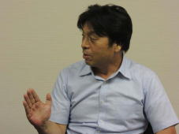

| 『検証の旅：ピラミッドの石はレーザー光線で切っていた？』<エジプト・ギリシャ> 検証の旅 海外編シリーズ | |
| 小林 健 | |
| kenshonotabi Pyramid no ishiha laserkosen de kirareteita kaigaihen sonoichi (2013) | |
はじめに
「人生は旅と出会いで決まる」
これは、木内鶴彦さんと出会い、共に "検証の旅"に繰り出すなかでいつも心に浮かんでくる言葉です。
人生はたった一度。泣いても笑ってもたった一度。それが人生。
この人生を充実させ豊かにしてくれるのが、旅であり、出会いだと思います。
私は１１年前に「二度目の人生を生きている」人物と出会いました。 その人物こそ、その後、長い旅を共にすることになる木内鶴彦さんだったのです。
「死からの生還」を果たした人は、その後の人生において、価値観や人生観、死生観などが一大転換する「心の変容」 が生じるという話を聞いたことがあります。おそらく木内さんもそんな稀有な体験者の一人なのでしょう。
私は木内さんから、今までに多くのことを学びました。肉体と意識について。生と死について。過去と未来について。生態系と人間について――。
なかでも強く心に突き刺さったのは、最期に「やったね！」と言って終える人生の在り方 でした。
木内さん自身、臨死に瀕したとき「悔やんで悔やんで」人生を終えたそうです。やりたいと思ったことをしてこなかった。与えられた立場で、やれることをしてこなかった。その後悔は本当に辛く苦しいものだったそうです。だから死の淵から戻ってきた木内さんが真っ先に思ったのは、今度死ぬときは絶対に後悔しない人生を生きようということでした。
臨死体験者である木内さんに初めてお会いしたときに聞いたこの話は、ことのほか説得力がありました。
人生の終焉とは、いくら後悔してもやり直すことのできない、最終地点です。その地点に私も立つ日が来るでしょう。そのとき「自分は精一杯やった」と言って終えられる人生をこれから歩もう、と心に誓ったことを覚えています。
本書は、「フォーラムソラ」の誕生経緯、そして現代よりずっと進んだ太古の世界が存在しているならば、もしかするとそれは、今を生きる私たちのお手本になるのではないかという思いから始まった「検証の旅」の話へと続きます。
臨死体験で見た不思議な世界。宇宙の視点から見た地球の存在。
これからを生き抜くために、私たち人間が気づかなくてはならないこと...。
日本はもちろん地球上には、先人の残したメッセージが各地に存在します。本書が、そのメッセージのひもとき役となり、先人との語らいのガイドブックになればと思います。そして、自分のなかにある常識や壁を超えるためのきっかけとなればとも思います。
この１１年間の検証の旅をもとに、地球と共に生きる あなたのためにこの本を書きました。
本書をご覧になる際の注意事項
本書は電子書籍を見る端末によって見え方が異なります。スマートフォンなどの小さな画面、あるいはiPadなどでは配置が崩れて読みにくくなるなる場合もありますので、予めご了承願います。
エジプト、ギリシャの情報は、検証の旅を催行した当時（２００２年１０月）のものです。変更されている場合がありますので、あらかじめご了承ください。
【第一章】地球で生きるためのキーワードを探す
●「フォーラムソラ」を設立したわけ
「フォーラムソラ」は、木内鶴彦さんを常任講師に招き、ご本人の著書『宇宙の記憶』のメッセージをさらに深く探求する会として、２００２年にスタートしました。以来、１１年間、毎月１回の勉強会を開きながら、国内はもとより世界各地へ「検証の旅」に出かけています。
なぜ、検証の旅なのか――。
それを説明する前に、木内さんについて簡単にご紹介しておきましょう。
長野県佐久市に住む木内さんは、世界的に有名なコメット・ハンター（彗星捜索家）です。
木内さんはこれまでに４つの彗星を発見していますが、なかでも有名なのが１９９２年に発見した「スウィフト・タットル彗星」です。
この彗星は、１８６２年に米国のスウィフトとタットルという２人の天学者によって一度発見された周期彗星です。しかしその後、行方がわからなくなっていました。
この彗星は軌道計算から１２０年周期と推定され、次は１９８２年に地球にやってくることになっていました。ところが、その年も、翌年も、その翌々年も姿を現さなかったため、世界中の天文学者が探し求めるところになりました。この彗星は毎年８月中頃に流れ星が見られるペルセウス座流星群の母天体で、地球の軌道とこの彗星の軌道が接触しているということから、特に有名でした。
もちろん木内さんも発見しようと観測していました。いろいろなデータを調べ、天空上のこの範囲に見えるはずというポイントを絞り込み、毎晩日没から明け方まで根気よく観測を続けました。その努力が実って、１９９２年８月２７日の午前３時ごろ、ついに１３０年ぶりに戻ってきた彗星を見つけることができたのです。
この発見は、世界の天文学界に衝撃を与えました。スーパーコンピューターと最新の望遠施設を駆使して探し求めていた彗星を、在野の研究家が、それも電卓と大型双眼鏡を使って発見したからです。
木内さんをこのような世界的な彗星探索家にしたのは、実は「臨死体験」だったといいます。人間の役割とは何か、自分とは何なのかを考えるようになり、臨死体験以降、消化しきれなかった「思い」が彗星捜索に向かわせることになったのだといいます。
木内さんが臨死体験をしたのは１９７６年、２２歳のときでした。当時、彼は茨城県の航空自衛隊・百里基地で、ディスパッチャーという航空管理の仕事についていました。
勤務先で突然激痛に襲われた彼は、茨城の東京医科大霞ヶ浦病院に緊急入院しました。「上腸間膜動脈性十二指腸閉塞」という珍しい病気でした。世界にも１２０例しか症例がなく、原因はよくわからないのですが、ストレスなどから背骨と動脈の間に十二指腸が挟まれて腸閉塞をおこすというものでした。しかも、この病気になって命をとりとめた人はいないという、大変恐ろしい病気でした。
入院後、一晩で体重が３０キロ激減、病状は改善されないまま衰弱が進み、入院から２０日ほどで、とうとう木内さんは死を迎えることになりました。
脳波計や心電図などすべてのモニターが、死を告げていたのです。
ところが、その後３０分ほどして、彼は蘇生することになります。まさに死の世界からの帰還です。
この死の状態にあった３０分間に木内さんは、時空をこえた過去と未来への旅をしていました。
木内さんが私に語ってくれたそのときの体験は、衝撃的なものでした。それが、木内さんと行く「謎解きの旅」につながっていくことになります。この１１年間、木内さんとともに「フォーラムソラ」のメンバーが現地でどんな謎を解いていったのか、その内容についてはこの本のなかで随時ご紹介していきますが、ここでは、まず謎解きの旅の受け皿となる会、フォーラムソラ設立の経緯についてお話しすることにしましょう。
●彗星捜索家ってなんだ？
そもそも私が木内さんに出会ったのは、２００２年２月、知人の紹介によるものでした。
私に木内さんを紹介してくれた知人は、霊界や死後の世界、先史文明やオーパーツ、さらにはＵＦＯにいたるまで、いわゆるカルト情報に精通している人でした。そんな彼の紹介だったので、「臨死体験者」と聞いて始めは少々敬遠気味に話を聞いていました。
当時、私にとっての臨死体験者といえば、深夜テレビや夏の特別番組に登場して、三途の川の話をする人といったイメージで、それほど興味の湧くジャンルではありませんでした。実は、私の母も何度かそんな経験をしたことがあって、三途の川や花畑、故人の身内や親せきが迎えにくるといった話は聞かされたことがありました。
しかし知人の話をよく聞いてみると、木内さんの臨死体験談は、私の母のレベルではないことがわかりました。先にふれたように、息を引き取ってから３０分ほどして蘇生。その間に、宇宙の始まりから未来までを体験したといいます。
そうなると、かなり興味が湧いてきて、どんな世界を見てきたのか、本人から話を直接聞いてみたいと思いました。
ランチを食べながら会うことになり、指定されたのが東京の青山ベルコモンズ１階のカフェでした。臨死体験を語るには何とも似つかわしくない場所でしたが、私が席に着くと、ほどなく木内さんは知人と２人で入ってきました。
木内さんはどっしりした感じの人で、柔道かレスリングでもやっていたような体つきでした。「初めまして、彗星探索家の木内です」と笑顔で挨拶する木内さんの第一印象は、「森のプーさん」というのがぴったりで、その風貌からは死を連想させるものは何一つ感じられませんでした。
当時の私は、広告制作会社に勤務し、ＣＭプロデューサー、映画プロデューサーを経て、インターネット・マーケティングとインターネットによるコミュニティ（ＳＮＳ）の仕掛けをプロデュースしていました。
その一方、「旅の力で人生謳歌をかなえる会社」の起業を目指し、旅行事業に欠かせない一般旅行取扱主任者免許の取得（２００２年１１月取得）を目指し勉強していることなどを、自己紹介がてら伝えました。
すると、木内さんも彗星探索家としていくつかの広告に出演したり、企業ＰＲとして天体観測イベントのナビゲーター役をしたり、ドキュメンタリー映画にも出演したことがあることなどを話してくれました。
映画という共通の話題から、「ディープ・インパクト」という映画の話になりました。１９９８年に公開されたこの映画は、未知の巨大彗星による地球滅亡の危機を描いた作品です。この物語の発端となる巨大彗星を発見した少年のモデルとなったのが、実は木内さんであり、その巨大彗星とは「スイフト・タットル彗星」だといいます。
この彗星を木内さんが１９９２年に再発見し、天文学界に大きな衝撃を与えたことは先にふれました。さらに衝撃だったのは、木内さんの再発見によって、スウィフト・タットル彗星の軌道を計算し直したところ、次回の回帰、つまりこの彗星が地球に接近する２１２６年には、地球に衝突する可能性が高いことがわかったのです。もし、仮に、この彗星が地球に衝突するとなると、地球はどうなってしまうのでしょうか。地上生物が絶滅するほどの大惨事になることは確実だといわれています。
なお、最新の軌道計算からは「地球には衝突しない」という結果が出ているそうで、一安心。しかし、スイフト・タットル彗星が次に接近するとき周期がわずか１５日ずれたら、地球に衝突する可能性がある点では、今後とも目を離せないことには変わりはないそうです。
私は不意を突かれてしまいました。臨死体験についてちょっと聞いてみようと軽い気持ちでお会いしたのに、今や地球存亡の危機に人類はどう立ち向かうべきかという、何とも壮大な話に巻き込まれていました。目の前にいる人は「生きている人」として、私が考えている以上の人だということがわかったのです。
●死んでも意識は存在する？
木内さんの臨死体験の話を聞いて、まず驚いたのは「死後も人間の魂（意識）は存在する」ということでした。体の機能がすべて停止状態になっても意識は存在していて、死直後は、生死の境を感じることができないといいます。つまり、肉体と意識は別々のもので、死ぬと意識は肉体から離れていきます。肉体がないので物体に触れることはできないのですが、不思議なことに見たり聞いたりすることも、「自分の体」も感じることができるのだそうです。
木内さんも、三途の川を経験します。そこから先はとても不思議な話です。「自分の意識がとてつもなく大きな集合意識と一体化していき、それと同時に宇宙の始まりから生命の発生、人類の歴史まで莫大な情報が流れ込み、それがあたかも自分が獲得した知識であるかのように広がっていった」といいます。その大きな集合意識のなかに次第に溶け込む一方、自分という意識が何度か薄らいだそうです。
こんな例を話してくれました。
「自分の意識と大きな集合意識の関係は、たとえば『銀行のＡＴＭ』と『中央のスーパーコンピュータ』の関係によく似ています。ＡＴＭは『個』として存在していますが、実は中央のスーパーコンピュータとつながっています。どんな小さなＡＴＭの情報もすべて中央のスーパーコンピュータの一部であり、スーパーコンピュータはＡＴＭの情報すべてを吸収していきます。つまり、ＡＴＭが『個々の意識』、スーパーコンピュータが『広大な意識』です」
私は何となくわかったような感覚になりました。科学万能主義の現代、「第六感」や「三つ目」の力、「潜在意識」の活用といった言葉が今も使われ、実際に役立てられています。ということは、人間は元来動物や植物、過去や未来とつながっていて、もしかすると私たちは「広大な集合意識」にアクセスできるのかもしれない...、そんな感覚にとらわれました。
この広大な意識を理解することが、木内さんの臨死体験を理解するためには非常に重要なことだと気づくのに、私はさらに５年の歳月を要することになるのですが、話を進めましょう。
木内さんは広大な集合意識を「膨大な意識」と表現しますが、あの膨大な意識から自分がなぜ抜け出せたのか、不思議だといいます。膨大な意識の世界のなかでは、あたかもすべてが自分であるかのように思えてしまうため、そこから戻ってくることは不可能だろうというのです。
それができたのは、木内さんは死後間もなくして自由の身となった意識を、自身が６歳のときのあるシーンに飛ばしてみたり、未来の初老の自分に飛ばしてみたりと、時空を超えて個を保つための「テストフライト」に成功していたこともあるでしょう。そのようなテストフライトをもとに、その後押し寄せる膨大な意識に溶け込みながらも、個の意識をキープし、最終的には抜け出すことができたのでしょう。
しかし、たとえ個の意識をキープできても、肉体が使いものにならなければ帰還することは不可能です。木内さんの場合は、医師たちの懸命な蘇生処置もあり心肺停止からおよそ３０分後に息を吹き返したのです。
木内さんの検査や手術、その後の経過などはすべて記録され、希有な症例として医学学界に報告されました。
●月が１万５千年前にやって来た
地球の歴史を臨死体験で見てきた木内さんの話のなかで、最も興味を引いたのは、「今眺めている月は１万５千年前に地球にやって来た」ということでした。しかも、後に月となる巨大彗星が地球に接近したことにより、地球は大災害となったのです。巨大彗星がもっていた大量の水が落下し、その衝撃で大地は切り裂かれ、人類が有していた高度な先史文明は壊滅し、生命を誕生させ活性させる水の状態も変えてしまったのです。
巨大彗星が地球に天変地異をもたらすことを予測していた人類は、避難要塞を各所に築き大洪水に備えました。そのほとんどの要塞は大洪水にのみ込まれてしまいましたが、今でもいくつかその痕跡を見ることができます。そのひとつが、天空都市といわれる「マチュピチュ遺跡」だといいます。
マチュピチュ遺跡は現在海抜２０００メートルほどの高地にありますが、当時はその倍の海抜４０００メートルの位置にあり、厚い岩盤に守られた平原だったといいます。この高地に避難要塞を築きましたが、大洪水によって大地はえぐりとられ、最終的には切り立った峰の上だけが残されたのです。
大陸が引き裂かれるほどの壊滅的な災害を引き起こした大洪水。そこから逃れようとする人々。失われた文明を再興しようとする人々――。
実は、木内さんが見た臨死体験では、大洪水からしばらくして人類は再び文明を取り戻し、その技術を使ってピラミッドを建造したのだそうです。その造り方は、本当に驚くものでした。当時「土木建築用の飛行物体」というものがあり、たくさんの円盤がどんどん巨石を積み上げていきます。そのうえ、巨石は２本のレーザー光線でカットしていくので、見事に面取りされた巨石が正確に組み合わせられていきました。
その巨石は花崗岩という固い石なのですが、当時の人たちは、現在のセメント技術のように、どろどろに溶かして再結晶化させる技術をもっていました。ですから、ピラミッドの巨石は、天然の石を積み上げたものと異なる特徴をもち、再結晶化が進み互いに浸食しあい、融合し合っている様子を実際に確認できるといいます。
実は、月がやってくる前の地球の水、つまり「太古の水は活性化した状態」にありました。エジプトのピラミッドを建設した人々もこの水を求めピラミッド装置を造ったわけですが、なんと木内さん自身も臨死体験の記憶を頼りに太古の水（活性水）を独自に作り、日々愛飲しているとのこと。この水のおかげで、退院後の衰弱した自分自身の体を改善することができたと話してくれました。
まだ会ってから数時間しかたっていないのですが、１０年分ぐらいの情報量をまるでシャワーのように浴びていました。実際、これほどわくわくして話に集中し、聞き惚れたことは後にも先にもなかったと思います。
木内さんの話は、「未来」へと続きました。
木内さんは未来については「２つのビジョン」を体験してきました。
主として見えたのは、砂漠のように荒れ果てた大地で廃嘘の石に腰をかけ愕然としている自分。そこから見える山には木が一本もなく、廃墟の周りには多くの人たちが倒れていました。そのビジョンに重なるように、不鮮明ながらも緑豊かな場所で星を見ている自分。この２つのビジョンが同時刻の同じ場所だということは、自分の容貌と空の星の輝きが教えてくれたそうです。
「意識の旅」を経験したことのない私たちには、この情景もなかなか理解できるものではありません。この２つのビジョンの差がどこから生じるかというと、それは人々の意識やそれに伴う行動の違いで左右されるのだと木内さんは話してくれました。
つまり、確率が高いほうが鮮明に、確率の低いほうがうっすらとビジョン化されているようなのです。木内さんがこのビジョンから読み取った「緑豊かな世界」が実現する確率は、わずか０.００１％に過ぎないといいます。
私は、木内さんにたずねました。
「この０.００１％はもう少し何とかならないんですか」
すると、こんな答えが返ってきたのです。
「たとえば、日本人の人口は１億２０００万人、そのなかの０.００１％、つまり１２０００人が新しい道筋を作り、それを周りに伝えていくことができれば、そこから世界を変えることだって十分できます。０.００１％は限りなくゼロに近い。でも０％でないかぎり可能性はあるのです」
●０.００１％の可能性に向けて動き出す
木内さんは臨死体験のなかで、時空を超えた壮大な旅をしてきました。なかでも注目すべきは、近未来において「地球環境保全の重要性を訴え活動している自分の姿を見た」という点でした。
ところが、現実社会で生活が再び始まると、自分が未来の地球環境を改善する活動に携わるとは到底思えず、きっとあの体験は夢だったんだと言い聞かせ、子どものころから好きだった彗星捜索に専念することになります。やがて木内さんは地球環境問題の舞台に向かうことになるのですが、その大きなきっかけになったのが、あのスイフト・タットル彗星の再発見だったのです。
次第に私は、臨死体験という事象への興味よりも、初対面の私に思いを伝えようとしている「木内鶴彦」という人物に惹かれ始めていました。そして、頭のなかではこんなことを考えていました。
木内さんは、きっと誰にも自分の体験を理解してもらえないと思っているのだろうな。それでも、自分にしか知りえない"人類への警告"を伝えようとしているのだろうなと。
おそらく、木内さん自身がそのことをよく知っているのです。そのことを十分承知のうえで"人類への警告"を語り、「緑豊かな世界」を手にするための活動を始めているのです。
人類が誕生したのには理由があり、「膨大な意識」から与えられた使命があるといいます。その人類に与えられた使命とは、この地球の生態系のバランスを守り、地球がよりよい自然環境を維持していくために、知恵と体を動かすということです。
そのために、発達した脳を与えられ、自由に動く手足を与えられたのです。決して人間社会だけの便利さを追求するために与えられたわけではないのです。このまま経済至上主義で環境破壊を続けていくならば、０.００１％のわずかな可能性もなくなってしまうのです。
私は腹を決めました。どうせ一度きりの人生。地球を変える０.００１％の可能性にかけてみよう。臨死体験という不思議な出来事から端を発する、勇気ある目の前の人物と行動を共にしよう、志を共にしよう。
ただ、どうやって木内さんの思いを共有し、形にしていけばよいのか。自分に何ができるのだろうかと思いを巡らしていたとき、木内さんが
「臨死体験で得た情報があまりにも膨大で、今は記憶からすっかり抜け落ちていますが、重要と思われる過去の場所や文化にふれることで、その情報を記憶に呼び起こすことができる」
こう言ったのです。私はピンとくるものを感じました。木内さんが臨死体験のなかで訪れたさまざまな場所に足を運び、体験内容を検証することができれば、未来を変えるヒントが得られるかもしれない。それがカタチになれば、私の今までの経験も、これから始めようとしている旅行事業も、すべてを生かすことができるのではないか。未来へのメッセージを受け取りに行く。そのナビゲーターこそが、私の役割ではないか――。
木内さんに２つの質問を投げかけてみました。
「緑の世界へのヒントが見つかりそうな場所や、重要なポイントはすでにピックアップしているのですか」「もしその場所が特定されているのなら、その地に足を運んで検証する必要はないのですか」
木内さんから、こんな答が返ってきました。
「確認したい場所やポイントはすでに特定されています。しかし、すべてを記憶しているわけではないので、手探りで訪ね歩かなければいけないところもあります。できれば検証の旅にすぐにでも出たいのですが、現実はそう簡単ではありません。もし、検証できたら、未来の自分自身に残してきたキーワードが各地にあるはずだから、それをつなげていくことで大きなヒントが得られるはずなんですけどね」
思うに、木内さんが体験したことや気づき、学びなど、これは木内さん一人のものではないのではないか。これから地球で生きる人類の財産であり、生態系の循環を守っていく地球づくりのために必要なヒントになるのではないか。そうであれば、このキーワード探しの旅は、緑豊かな世界に賛同する人々と共有すべき旅なのです。
私は宣言していました。
「そのキーワード探しの旅を企画します。検証の旅の会をつくりましょう」
木内さんも前向きでした。
「とにかくやってみよう。やってみないことにはわからないよね」。
まだ出会ってから数時間余りでしたが、０.００１％の可能性に向けて動き出したのです。
●第一回フォーラムソラを２名で開催
早速「検証の旅の会」設立に向けた目的と主旨を改めて考えてみました。
木内さんの臨死体験をイメージしようとしても、なかなか捉えることのできない壁を私は感じていました。勉強会や講演会などで話を聞くだけではどうしても越えられない壁、それを誰もが感じているのではなかと思いました。
その壁を少しでも越えて、木内さんが伝えたいことの本当の意味を理解するには、はたから見ればちょっと無謀かもしれませんが、臨死体験のなかで訪れたという場所に出向き、共に何かを発見し、より良い未来を築くための礎となるような会を作りたいと思いました。
別の言い方をすれば、木内さんと共に既成概念を捨てるための冒険。過去と未来をつなぐための、世界をまたにかけた温故知新の旅。今までにない会が必要とされている。それがまさにここから始まろうとしているのだという、根拠のない自信が私にはありました。だからこそ、会の目的と主旨をきちんと掲げることが大事だと考えて、次の４つを柱に会を進めていくことにしました。
（１）木内さんが臨死体験のなかで見たり聞いたりした重要な事柄。その痕跡が残る場所や文化にふれることで、重要性を再確認する旅を「検証の旅」とする。
（２）同行者はその場でリアルタイムで学び、より深い気づきと価値観を共有できる。
（３）同行者は木内さんの検証に立ち合い、自らも同じ検証を行うことで、木内体験の真相を確認すると共に自らの感性を高める。
（４）「検証の旅」で得た個々のインスピレーションやヒントを、「緑の地球」を手にするための活動に活かす。
その後、木内さんと何度かミーティングを重ねていくうちに、「検証の旅の会」の姿が見えてきました。毎月一回の勉強会も開催することにしました。果たして毎月開催して人は集まるのかという心配はありましたが、未来を変えるかもしれない「検証の旅」を成功に導くためには、毎月の定例会は必要不可欠です。木内さんにも最終的には理解していただき、次のような活動計画が決まりました。
（１）年に２度（春と秋）検証の旅を催行する（国内１回、海外１回）。
（２）木内フォーラムを月例会として毎月開催する（東京にて）。
（３）木内フォーラムの内容は、著書「宇宙（そら）の記憶」の補足説明とする。
（４）木内さんが今最も注目していることを定例会で発信する。
こうして、ついに計画概要書ができあがりました（下図）。当時、コミュニティ名を「ＳＥＥＫ ～検証・宇宙（そら）の記憶～」としていましたが、親しみやすさからいつのまにかサブネーム「フォーラムソラ」の名前で呼ばれるようになりました。
※ＳＥＥＫは「捜す。捜し求める」の意味。
２００２年４月２８日、待望の第１回フォーラムソラ定例会が開催されました。記念すべき第１回目のテーマはストレートに「臨死体験の概要」としました。予定では５０名ほどの参加者を見込んでいましたが、現実はそれほど甘くはありませんでした。
この第１回目の勉強会の参加者はたったの２名、関係者も含めて６名という船出だったのです。
今でこそウエブサイトやブログ、フェイスブックといったＳＮＳのコミュニティツールがありますが、当時は知り合いを通じて告知を手伝ってもらうことが一般的でした。
主宰者として多少凹みはしましたが、これは告知方法をひと工夫すれば解決すると確信していましたので、あまり悲観的にはなりませんでした。
それよりも、たった６名を前にして全力投球でメッセージを訴えかける木内さんの誠実さに胸を打たれました。
初めて木内さんと会った日、私に一生懸命思いを伝えてくれた木内さんの姿そのものでした。私はこの姿を見たとき、このコミュニティはきちんと成立すると確信をもったのです。
この初回の経験がプラスとなり、フォーラムソラはそれ以降徐々にファンを増やし、安定的に会員を増やしています。
●ソラの旅は、地球が舞台
検証の旅は、フォーラムソラの核となる部分です。毎月の勉強会で気づいたこと、学んだことをもとに、木内さんが臨死体験のなかで訪れた場所に足を運びます。２００２年から今日まで海外９カ所、国内１１カ所、計２０カ所におよびます。これからも、木内さんの目線を通して謎解きをし、地球で生きるためのキーワードを探す旅を続けていきます。
「宇宙（ソラ）の旅・海外編」
・２００２年 エジプト・ギリシャ
・２００３年 メキシコ ～マヤ文明の検証とシャーマンとの交流～
・２００４年 北米サンタフェ ～先住民族との交流～
・２００５年 ペルー ～先史文明の検証＆インカ・シャーマンとの交流～
・２００６年 エジプト ～先史文明の検証～
・２００７年 モンゴル ～宇宙体感・光害について考える～
・２００８年 トルコ ～ノアの方舟とヒッタイト王国の謎～
・２０１１年 イスラエル ～古代ユダヤの精神性に迫る～
・２０１２年 ハワイ島 ～神々と祈りの楽園～
「宇宙（ソラ）の旅・国内編」
・２００２年 枚方・交野 （大阪府）
・２００３年 剣山・土佐神社 （徳島・高知県）
・２００４年 出雲 （島根県）
・２００４年 枚方・交野・貴船 （大阪・京都府）
・２００５年 三内丸山 （青森）
・２００６年 高千穂・幣立神宮 （宮崎・熊本県）
・２００７年 熊野三山 （和歌山県）
・２００８年 沖縄・久高島 （沖縄県）
・２００９年 剣山・土佐神社 （徳島・高知県）
・２０１０年 外海・長崎・島原半島 （長崎県）
・２０１２年 金山巨石群遺跡 （岐阜県）
・２０１３年 高千穂・幣立神宮 （宮崎・熊本県）
※検証の旅は、フォーラムソラ公式ブログ等でご覧いただけます。
この項の最後に、第一回フォーラムソラ定例会における木内さんの言葉 をご紹介しておきましょう。
私たち人間には、肉体と意識が存在しています。
肉体が本来もっている能力は、意識によって引き出せることを、
私は臨死体験から学びました。
その引き出した能力をすべて使い切ることで、
地球で生きることや、自分にとって本当に楽しい人生が
何なのかがわかってきます。
しかしこれは自分で探すしか方法がありません。
環境を変えたり、いろんな所に出向いてみる。
するとキーワードにふと気づくことがあるのです。
その瞬間、本来の能力や人生観といった、
すごくリアルなものが意識から吹き出してきます。
私は、これがとても重要なことだと捉えています。
私の旅もまた、
忘れてしまったキーワードを自ら探しに行くことなのです。
私と旅を共にすることが、
皆さんのキーワード探しのチャンスになればと思っています。
本来の姿を見つけた人間として、目が輝いている。
旅を重ねるにつれて、
そんな方がひとりでも多く現れてくれればと願っています。
【第二章】木内鶴彦×小林 健
エジプト・ギリシャの旅 謎を解くカギ
●私の見てきたことは、歴史学では常識外のこと。
現地に行って、一緒に謎解きをしよう、検証しよう。
小林 ２００２年４月にフォーラムソラがスタートして、今年１１年目になります。今日は初めて海外へ出た検証の旅「エジプト、ギリシャの旅」についてうかがっていきたいと思います。僕はこの十数年間、勉強会で木内さんのお話をほぼ毎月一回聞いて、検証の旅にも同行していますから、だいたいのことは把握しているつもりなんですが、今日はできるだけ初めての人にもわかるようにお話をうかがっていきたいと思いますので、よろしくお願いいたします。
木内 こちらこそ、よろしくお願いします。小林さんに出会ったのは、もう１０年以上前になるんですね。当時、私が生死をさまよって体験したことを、多くの人に伝えてみたい気持ちもあった。内容が内容だけに信じてもらえるかどうかは別として。そういう話を知人にしたとき、おもしろい人がいるというので紹介されたのが小林さん。会ってみると、細くて背が高くて、ちょっとおっちょこちょい風で（笑）。臨死体験の話をしたけど、「はぁ...、はぁ...」としか言わない。全然信用していないな、この人はと（笑）。あのときはどうだったんですか？
小林 死には誰でも興味があると思うんです。だからといって、試しに死んでみるわけにもいかない。そこで、木内さんのような臨死体験の証言が重要になってくると思います。そうは思うのですが、木内さんは見てきたようなことをいうわけです（笑）。かつて地球上には高度な文明社会が築かれていた、それが月からの大洪水で滅亡した、と。本当かなと思いますよね。ただ、木内さんはそのとき、自分が体験した「時空を超越した旅」について、僕１人を相手に全力投球で話してくれた。聞いているうちに話に引き込まれて、木内さん的には真実なんだろうな、本当かどうかを僕も確かめてみたい。そう思った。それで前章で紹介したように、まず勉強会を開いて木内さんの話を聞いて、そのうえで検証の旅に出るという企画を提案しました。僕もちょうどその頃、「体験型の旅」を起業しようと思って、旅行管理者のライセンスを取っているところだったんですよね。
木内 小林さんもそういうタイミングだったんですよね。勉強会と旅をセットにしたアイデアがおもしろいと思った。勉強会だけだとなかなか理解できないでしょうから、話を聞いた会員のみなさんが自然と「行って見てみたい」となってくるんじゃないかなと。でも、最初は勉強会を開いても、参加者がさっぱり集まらないんだよね（笑）。そのうちにだんだん人が増えてきて、それで僕が見てきた過去のなかで、建造物を見てもらうのがいちばんいいだろうということを思いついた。
小林 僕の目線は、勉強会に参加する一般の人たちと同じ目線です。木内さんの話は、教科書に載っていない話ですから、その場所に行って、これこれこうでと説明してもらえれば、何かつかめるものがあるのではないかなと。
木内 たしかに、僕が臨死体験で見てきたことは、歴史学の常識からみれば考えられないものです。その一つひとつを、現地に行って一緒に謎解きをしていこう、どっちが正しいか、どっちがつじつまが合うか、検証したかったというのがあるんですよね。現場に行って、こういう現象がおきたのはこういうことでしたということを、その場で伝えることによって、行った人たちが検証できるのではないかと。
小林 その第一回目として、エジプト、ギリシャの旅になったんですよね。その地を選んだのは遺跡として残されているということからでした。
木内 私のような体験をすると、現場に行くと、生死をさまよったときに体験したことが、鮮やかに蘇ってきて、今現在起きていることのように感じられる。たとえば、昔、大洪水があった。それが見えるというより、現実にそこにいる状態と同じになる。もちろんそれは、現在の自分がいるから、今見えていることは意識なんだ、ビジョンなんだとわかるんだけれども。
小林 過去と現在が、だぶって見えるということですか。
木内 本来、意識というのはつながっているものです。僕が死を体験したとき、自分の肉体はないけれど、「木内鶴彦」という意識はありました。これがまずベースです。その意識がありながら、個をとりこむもう一つの意識がありました。それを私は「膨大な意識」と表現しているのですが、個という意識をベースにして膨大な意識の記憶をなぞっていく。そんな感じでした。人間の立ち位置で見るのではなく、ビジョンとして見る。そのときの記憶が、現地に行くと鮮明に蘇るといったらいいのでしょうか。
別の言い方をすると、子どもの頃のことを思い出しながら説明するのは難しいですよね。それよりも、現地に行って、あの山があって、こうだったよね、と説明させてもらうのがいいだろうと。そのことも含めて、旅をアレンジしてもらったんですよね。
ところで、エジプト、ギリシャへ出発する前、あのとき成田空港に集まった人たちの意見はどうだったの？
小林 どうだったんでしょうね。興味本位だったんじゃないですか。神秘大好きの人。木内さんの本を読んで興味をもった人。話を聞いて純粋に行ってみようと思った人。いろいろだったと思います。
●エジプトに行ってまず見てもらいたかったのは ... 、
人工的に大きな石を加工しているということ。
小林 定説では、クフ王の大ピラミッドの建設には毎日２０万人の人が働き、３０年を要したといわれています。建造に使った石は、１０００キロメートルも離れたナイル上流のアスワンの石切場から手作業で石を切り出し、船で運んだ、とガイドさんは説明してくれました。
木内 でもね、船に乗せたといっても、当時の船だと、石を１個乗せただけで船底が川についてしまうんですよね。現地で石の大きさを調べてみると、２００トンを超す巨石が使われていた。それに、５０メートル近い高さのところに、６０トンから８０トンもの花崗岩が使われていましたよね。
小林 東京スカイツリー建設を担当した日本のゼネコンを代表する大林組が「クフ王型ピラミッド建造計画の試み」と題して、もしも現代土木の最先端で建てるとしたらどうなるかを実験し公開しています。その結果、現代技術の粋を結集しても、あれだけ巨大な建造物をあれほどの完成度で造るのは困難であると。
実際、現物を目の当たりにすると、こんな大きな石を切り出して運び、現場でノミで形を整え、積み上げたという定説のほうが荒唐無稽の話に思えます。
木内 私が臨死体験で見てきたなかでは、そういうやり方ではなくて、細かく砕いた花崗岩に液体を混ぜ、結晶化させるという方法だった。コンクリートをつくるときみたいに型枠に入れて石を成型していました。壁画の文字とか絵なども、柔らかい状態の石にスタンプとかハンコみたいなもので押しながら造っていた。生死をさまよったときにそれを見てきたので、エジプトに行ってまず見てもらいたかったのは、人工的に大きな石を加工しているということ。ひとつの着目点です。
小林 僕は、今回の検証の旅に行く前に、ピラミッドを何度か見学したことがあるんですが、目線を変えると、ピラミッドが全然違ったものに見えてきました。木内さんの話を裏付ける"物証"になるようなものが、あちこちに見受けられました。
木内 実際に多かったですよね。型枠に流し込んで石を造ったと思われる跡があったり、後から補正したと思われところがあったり、そういうところが何か所も見受けられました。絵文字に関しても、壁画をよく見ると絵文字にエッジが立っていたり、ミゾが９０度になっている部分が見受けられた。大きなレリーフも、柔らかくした石にスタンプを押しつけたと思われるところがありましたね。石を彫って描いたものならゴツゴツしているはずですが、スタンプで押したものであれば、表面が結晶化されるので、テカテカして輝きがあるような状態になるはずです。それも確認できましたね。
小林 ピラミッドを造った人たちは、花崗岩をどうやって細かく砕いたんですか。
木内 花崗岩そのものが細かい砂状になっている地域があるんです。多分、そういう地域の花崗岩を集めてきたり、人工的に砕いたものもあると思うんですね。その両方のやり方が考えられると思う。大きいものを造る場合は、まず底板を造って、その型枠の中にコンクリート状にしたものを流し込む。だから積み重ねなんかも、それほど難しいことではなかった。
小林 現実的に、その場でコンクリートを生成して現場で打つほうが、巨大な石の塊を動かすよりはるかに簡単ですよね。そのほうが、つじつまが合います。
木内 砕いた花崗岩を固める液体がありました。アフリカにも南米にも多分あったと思うんですが、その液体は植物でつくられていました。数年前、その植物液が見つかったようなことを言われています。また最近、花崗岩を全石コンクリートに使えるという土木建築技術が復活しているらしいですね。
小林 これはフォーラムソラ会員からの情報なんですが、最近、フランス人の科学エンジニア（ジョゼフ・ダビッドビッツ博士）が、石の組成を分析して、エジプトの大ピラミッドは自然な石の塊から造られたのではなくて、人造石で造られたと発表しているんですよ。この説に基づいて人造石を造った動画も公開しています。これなんかも、木内さんの話を裏付けるものかなという気がしますね。
木内 検証の旅に行くと、実際、会員からいろいろな意見が出てきたり、検証したことをもとに調べたりする人がいます。そういうところも、この旅のよいところです。
小林 ナイル上流にあるアスワンの町の一角に「石切場」と呼ばれているところがあります。行ってみると、石切場はとても広い。そこには観光名所となっている「切りかけのオベリスク」もありました。ガイドさんは、石にクサビを打ち込んで切り出したといっていましたが、あそこは、もともと自然の花崗岩でできた場所ですか。それとも、花崗岩をコンクリート状に加工する場所なんですか？
木内 おそらく、あそこは、実験的に型枠で造ってみるとか、不要になったものを捨てた場所だと思うんです。柔らかい状態のものをスコップですくったような跡も見受けられましたよね。（ 参照１ ） このほか、石の加工技術として、「反射鏡」を使って、高温のレーザーのようなもので岩石を切るという技術があったんじゃないかと私はずっと思っているんです。（参照２ ） そういうものを使っていたのを臨死体験のとき見ているわけですから、当時の人たちはいろいろなやり方でやっていたなぁというのがあります。
●空中を移動する「フライング・ソーサー」で石を運ぶ。
たとえば、これは現在のトラックだと思えばいい。
小林 ピラミッドの石を積み上げていくとき、ここに大きな石があるとすると、それをドーナツのようなカタチをしたもので積み上げていたと、木内さんはおっしゃっていましたね。
木内 当時の人たちは空中を移動する乗り物を開発していました。「フライング・ソーサー」というんですけど、砂漠地帯のどこかに埋まっているはずなんですよね。
小林 それは飛行機というより、ＵＦＯに近いものなんですか。
木内 そうそう。僕は臨死体験のときにそれを見てきているから、学者さんたちはそれを聞きたくてしょうがない。ある集まりで、ロシアのある先生に原理を話したら、今までいろいろなアイデアがあったけれど、どれも浮き上がらない。これは浮き上がる、これしかないと。簡単にいうと、フライング・ソーサーはプラズマ流と磁界を使って、手のひらの感触でバランスをとりながら空中移動する乗り物です。たとえば、これはトラックだと思えばいい。この中に人が乗っています。（ 参照３ ）
小林 僕は、地上から操作しているのかと思っていました。それは、ドーナツみたいに真ん中があいていたわけですよね。トラックの小型車、中型車、大型車みたいなのを造って、石を積んで、スーッと空中を軽々平行移動するというイメージなんですね。動力は、プラズマなんですか？
木内 当時、炭を使って電気をおこすことができました。炭素とか金属に光をあてると電子が流れます。光というのは電子なんですよ。そこからプラズマ流をつくるという方法が１つ。もう１つは、強力な光を水晶管のなかで循環させるという方法。その２つのやり方がある。当時は、後者ではなくて、炭を利用したほうの代用品でやっていました。
小林 プラズマは無限のエネルギー源になるということで、今、研究開発が進んでいるみたいですね。その技術をこの時代に使っていたということですか。
木内 もともと強烈な光を操る装置がありました。実は、水晶管の中に一回光を閉じこめてしまえば、それが割れないかぎりは、燃料がなくても、発電し続けます。それは永遠の発電器です。それをもう一度つくりたいなと。
小林 イラクの遺跡から「バグダッド電池」も発見されていますよね。
木内 今発見されているのは、炭素電池の時代のものでしょう。多分、水晶管を使ったものに関しては、割れたりしていると、発掘品にあったとしてもおそらくわからないでしょうね。
小林 僕は何度もピラミッドや神殿の内部を見ていますが、不思議なのは明かり取りの窓もないのに、天井や壁にすすの跡が残っていないことでした。定説では、当時は松明とかオイルを使っていたとされています。この時代に、炭素電池がすでにあった、電気を使っていたということですか。
木内 そうそう。炭素電池のいいのを持っていたから、それで明かりをとっていました。だから、電線もいらない。地下に入ってもすすの跡がないはずなんです。たとえば、デンデラにある「ハトホル神殿」の地下室に電球のレリーフの壁画がありますね。そういもので明かりをとっていました。
小林 電球のレリーフのあるデンデラは、今回行ったルクソールから２００～３００㎞のところにあるので、４年後の２００６年にまた行くんですよね。次は、電球のレリーフを見に行きましょうと。そのときに参加した会員からの情報によると、アビドスの壁画を調べてみたら、馬蹄形のフライング・ソーサーらしきものがあった、木内さんの話は本当だったんだと言っていました。（ 参照４ ）
木内 ああ、そのカタチもありましたね。
小林 アドビスの壁画については、「２００６年エジプトの旅編」で話してもらいましょう。
●ピラミッドが造られたのは...、
月の大洪水から１００～２００年が経ってから。
小林 ピラミッドが造られたのは、いつ頃になるんですか。
木内 そうだね、月による大洪水のあとから１００年、２００年経ってからでしょう。
小林 木内さんは、１万５千年前、地球に彗星からものすごい量の水塊が降ってきて、地球環境は一変したと。洪水をもたらしたその彗星は、後に月になったとおっしゃっていますね。
木内 私が臨死体験で見てきた超古代の地球には、もともと月はありませんでした。これは天文学をやってきた私自身大変困惑するところなんですが、それはさておき話を続けましょう。
そのころ、人類は高度に発達した文明を築いていました。当時の人たちは、地球の生態系の主役は植物という考え方をしていた人たちで、生命の循環システムである自然を守ることを第一義に生きていました。科学はその認識のもとに発達していたので、ある意味では今以上に進歩していたといっていいと思います。天文学は今と同じくらいに進んでいました。
巨大彗星が地球に異常接近する。天文学者たちはそのことを発見し、軌道を計算した結果、地球的規模の大災害になることを予想していました。そこから１年の歳月をかけて、少しでも被害から逃れるために、避難用都市を建設したり、ノアの方舟のようなものを造ったりして、北アフリカなどの高地の頂上にみな避難したんです。そこには、大洪水になっても水が入らないような建物がたくさんありました。
小林 大洪水というと、すぐに思い浮かぶのが「ノアの大洪水」です。そこには「４０日４０夜の雨」が降ったと書かれている。世界各地にはこれと似たような伝承がいくつもあって、南北アメリカの先住民の間には「山より高い波が押し寄せる」とか、「水面が天に届く大洪水」とか、そういう言い伝えが残っている。この伝承からすると、凄まじい洪水が地球を襲ったことになります。
木内 地球に接近した彗星から、大地の３分の１が海底に沈むほどの水量が地球に落下しました。それによって巨大な津波が起こり、地球を何周もしながら命も山々も洗い落としてしまいました。そのなかで、かろうじて生き延びたグループがいました。この人たちから新天地ができていくことになります。
小林 北アフリカあたりは、地球上でいちばん高いところだったんですか。
木内 その頃、地球は高地と平坦なところに分かれていて、北アフリカ一帯はいちばん高いところだったんです。現代の学者がパンゲア大陸と呼んでいますが、かつての地球上の大陸は一つにつながっていました。大洪水以前の世界では、海面は今よりも２０００メートルほど低かった。つまり、地上に降り注いだ水量は、地球上の表面を２０００メートルもかさ上げするほどの途轍もない量だった、ということです。それほどの水量が地上に落下したために、大陸は遠心力で飛ばされ分裂してしまった。津波と大洪水によってえぐり取られていったのが、マチュピチュのウルバンバ渓谷です。
小林 全地球的な規模の大洪水が起きたために大陸が移動した――というのは、マチュピチュに行ったとき、「カブレラ・ストーン」と呼ばれる線刻画の描かれた石のなかに、そういう画があって、そのときに今みたいに具体的な話があったんですよね。
木内 詳しいことは「２００５年ペルーの旅」のときに話すことにしましょう。「ノアの大洪水」については「ノアの方舟」を検証した「２００８年トルコの旅」のときに話すことにしましょう。
●ピラミッドを造った目的は、医療のため。
体を調整するための設備として造られました。
小林 エジプトに話を戻します。地元の人たちは、ピラミッドはもともとホスピスとか病院だったと言っていますよね。
木内 そう言っていますね。
小林 ピラミッドがもともと造られた目的は何だったんですか？
木内 医療のためです。体を調整するための場所として造られました。大洪水を機に、地球環境は大きく変わってしまったと先ほどお話ししました。環境が激変したことによって、体が耐えられないんですよ。洪水直後、生き残った人たちも、ほとんどの人が亡くなったと思う。だけど、植物はどういうわけか、それに耐えて生き延びているんですよね。
小林 かろうじて生き延びた人たちも、さらに試練が待ち受けていたということですか。
木内 試算してみると、地球は自転速度が遅くなって重力が０.２パーセント増えていました。現代に比べて重力（引力）が小さかった当時の人たちは、その分だけ身長が大きくて、彼らは２、３メートル近くありました。平均寿命は２００～３００歳くらい。そのころは月がなかったので、人類は月による潮汐運動の影響を受けていなかったんです。だから、種の保存を促す女性の生理現象は年に一度しかなかった。地球上の気圧も１.７５～２気圧から、大洪水後は１気圧になりました。つまり、月による大洪水を機に、命をめぐる環境は何もかもすべて大きく変わってしまった。
ということは、昔と同じような状態に肉体を置かないと、体そのものが非常に危険な状態になります。そこで、「重力軽減装置」のようなものを使ってその中で体調を整えたり、ストレスから生じる老廃物を排出する特別な水につ浸かったり飲んだりしながら体を癒していた。だから、ピラミッドの下にはプールがあるんじゃないかと、僕はずっと思っています。
小林 ピラミッド内部はいくつかの部屋と通路があります。どの部分がそれに該当するんですか。
木内 ピラミッドを見たときに、外壁（化粧板）は別にして、基礎部分に段状に大きな岩を積み重ねたところがあります。その中は、密閉空間になっている。その空間（部屋）がピラミッドを造った本来の目的です。ギザのピラミッドの中に入ったときに、階段を上っていくと、斜めに真っ直ぐ下方に向かっている通路がありましたね。
小林 天井も低く通路が狭かったですね。背中をかがめてずっと歩いていかなければいけないほどでした。
木内 高度な技術力をもった人たちが、なぜ狭い通路しか造らなかったか。この通路は要するに、注射器のシリンダーの役目をしているんです。その通路は、大きな石が下にすべり落ちていくような造りになっていた。つまり、大きな石がスーッと落ちると、中の空気が注射器でぎゅっと押された状態になり、加圧されます。その空間は１.７５～２気圧になる計算になっているはずです。
小林 もともと地球は、１.７５～２気圧だった。大洪水によって地球上は１気圧になってしまった。そうすると体が適応できないので、１.７５～２気圧のところに入って体を癒し、また具合が悪くなったら入る。それを繰り返しながら、じょじょに環境適応できるようになったということですね。浴槽のようなものもありましたね。そこに水を張って、体を癒やしていたんですか。
木内 さきほどピラミッドの内部に、１.７５～２気圧に加圧する空間があるといいました。その中の水の状態が、活性水。地球上の命を育んできた、太古の水です。病気になるとそういう水が必要になってきます。そこにヒントを得てつくったのが、「太古の水」です。
小林 そのあたりのことは勉強会でまず話を聞いて、現場に行ってそこでも話を木内さんから聞きました。実際、ピラミッドの中に入って、ここでこうして――という話を聞くと、木内さんの説が、急に現実味を帯びてきます。現地のガイドさんが「石棺」と説明しているものを眺めたり手で触ったりしてみると、石の切り方とか、研磨の仕方も、手仕事で細工したとは到底思えない。赤い花崗岩でできたその石棺をよく見ると、「水抜き」と思われる部分もありました。つまり、これは石棺などではなく、体を癒すために特別の水を入れる浴槽だったと考えたほうが整合性があります。（ 参照５ ）
●ピラミッドはもともと、底辺の長さが ...
高さ×３.１４（円周率）で造られています。
小林 ピラミッドは、カタチも重要といわれていますね。
木内 それも重要なんです。高さ×３.１４（円周率）で、底辺の長さが出ます。これを４で割ると、四角錐の底辺１辺の長さが出る。これで造るのがいちばんいいことがわかった。
小林 これがベスト？
木内 ベスト。
小林 一辺の長さが重要なんですか。
木内 面は関係ないんです。糸でも針金でもいいので、一辺の長さを、高さに円周率をかけた大きさの円錐、あるいは正四角錐をカタチづくります。そうすると、実はその中に入るだけで体の活性が起きてくるんです。おそらく、重力波、物質波みたいなものがこの中におきて、それが生き物の生体反応の周波数と同調するのではないかと僕は思っているんです。たとえば、こんな実験をしたことがあります。生卵を割って、その円錐あるいは四角錐のなかに置いたものと、置かないものとを比較してみました。結果、置いたものは１カ月保つ、置かないものはすぐに腐ってくる。つまり、これは、常温状態の冷蔵庫のようなもので、穀物をストックするのにいい場所かなと。さらに１.７５～２気圧に加圧したものを食べることによって、私たちの体も癒されるのではないかと思う。
小林 木内さんは、ピラミッドのカタチは、傾斜角度が５２度だとおっしゃっていますよね。
木内 ええ、５２度になる。中途半端な数字になる。それがなぜ出てくるかというと、高さ×３.１４の円錐あるいは正四角錐をつくると、おのずとその角度になります。
小林 「屈折ピラミッド」は傾斜角度が違います。「屈折ピラミッド」はその名のとおり途中で角度が変わっていて、下部は５２度。途中から、４３度になっているんです。何か理由があるんですか。
木内 多分、最初に５２度でつくって、ちょっと違うぞと、いろいろ研究したんだと思います（笑）。自然なカタチは、砂を上からすーっと落としていくと、ピラミッド状になります。粒子の大きさと、重力指数でできる円錐がいいといわれています。そのカタチの底辺角度が５２度。
小林 木内さんが現地で、「この砂山と同じ角度でピラミッドを造るといわれているんですよ」と実演されましたよね。実際、ピラミッドをバックに見ると、腑に落ちるものがありました。（参照６ ）
木内 ピラミッドのカタチは、あるときから統一されるようになったんです。統一される前のピラミッドが、「屈折ピラミッド」であったり「階段ピラミッド」であったり、いろいろあるわけです。
小林 大きさが全然違うピラミッドもあります。「赤ピラミッド」は、高さが「クフ王のピラミッド」の２分の１。これはどう解釈すればいいんですか。
木内 大きさは違っていいんです。ピラミッドの内部は、どれも同じ。中に大きな花崗岩で造られた段上の石組みがある。後の人が、その上に石を積んで、最終的に化粧板で覆う、そういう作業をしたということです。
小林 定説でいうと、王様か誰かが、一段の碑を造るわけです。それをどんどん積み重ねていって、それがピラミッドになりましたと。もともとは下の部分だけを祀っていたものを、最終的にピラミッド型にしたというのが現地のガイドさんの説明です。
木内 多分そうじゃないと思う（笑）。先ほど話したように、体を癒すための特別の部屋をつくるために、いくつかの大きな石を、それも５０００トンもあるような石を上に積んでいくわけです。その中にある空間は、完全な密閉状態にならなければいけない。その空間には斜道が設けられていて、斜道から大きな石を注射器みたいに下げる。そうすると、この中の空間の圧力が高くなる。本来の目的はこれだけだった。これが病院だった。そのためのものを造る技術があった。その時代の人たちは、それだけでよかったんです。
さて、後にこれを見た人たちは、どう思ったか。多分これは神殿ではないかと考えた人がいた。そこに細かい石をどんどん積んで、最終的に外装に化粧板を張り付けて仕上げ、クフ王やカフラー王たちが使った、ということだと思います。
小林 ピラミッドをもともと造った人たちは、１.７５～２気圧に調整できる空間を造ることが目的だったということですね。
木内 多分、昔は、段状の石組みだけが露出していたはずなんです。これを見つけた人たちがいたと思うんです。それも、「隕石の落下による大津波」の後。臨死体験のとき、その場面には遭遇していないんです。ただ、地中海全体を襲った大津波については体験している。それは、いわゆるエジプトが政権をもっていたころ。それからしばらく経って、ピラミッドを発見した人たちが外面を覆った。砂岩と石灰岩、日干し煉瓦などで積み重ねて積み重ねて、だんだん今のカタチをつくっていった。だから、ピラミッドの上部を外すと、間違いなく中は同じはずです。
視点を変えて話してみましょう。ピラミッドに使われている石の種類は「砂岩」「石灰岩」「花崗岩」の３つです。外壁は砂岩と石灰岩、中の組石は全部花崗岩です。石の性質上、砂岩、石灰岩は柔らかいから加工しやすい。大理石も石灰岩と同じ種類です。これとは逆に、花崗岩は地面の深いところで圧力がかかってできているから、結合が強いという特徴がある。加工しやすい砂岩、石灰岩が使われているのが時代的に新しい建造物。花崗岩が使われているのが古い建造物。年代が比較的新しいギリシャの遺跡は、砂岩と石灰岩が多かったですね。
小林 エジプト神話によると、有史以前の古代エジプトの歴史は３つの時代に分けることができるといわれています。「神々の時代」と「半神（はんしん）の時代」と「人間の王の時代」。
今までのお話をうかがっていると、こう解釈できると思うんです。先史文明をもっていたのが「神々の時代」。この文明は月による大洪水で滅亡した。しかし、その後、かろうじて生き残った人たちのあるグループがエジプトにたどり着き、先史文明の一部を継承し、ピラミッドやスフィンクスを建造した。これが「半神の時代」。これを裏付けるのがエドフ神殿の碑文です。この碑文には「大洪水の後、エジプトの地に７人の賢人がやってきた」「７人の賢人は、神殿や聖なる場所をいかに造るかについての特別の知識をもち、彼らによって造られた神々の館は、ごく短期間で造られた」ということが刻まれています。
こうして文明は再興されたけれども、ナイルの氾濫などで再び滅んでしまった。半神たちはこの段階でエジプトの地を去り、東をめざす旅に出る。その後を引き継いだのが「人間の王たちの時代」。彼らは特別の技術や知識をもっていなかったので、こう呼ばれるようになったのでしょう。しかし、この文明も大洪水で衰退したといわれています。もしかすると、隕石の落下による大津波が地中海全体を襲ったのは、この時代の終末期かもしれない。この時代の大洪水というのは、隕石の落下による大津波を意味しているのかもしれませんね。
それから数千年経ってから、新たな文明が始まることになるのですが、それが教科書で学ぶ古代エジプト文明ということになる。この時代、ピラミッドを見つけたクフ王たちが外装をきれいに仕上げ、使ったということですね。
●スフィンクスは本来、狛犬のような姿をしていたはず。
後の人たちが、砂から掘り出して加工したのでしょう。
 小林 スフィンクスの周りの石も、実際に見ると圧倒されるほど大きい。現代のクレーンでも持ち運びできないだろうというくらい巨大です。スフィンクスはどんな目的で造られたんですか。
木内 もともとは狛犬のような姿をしていたはずなんです。神社やお寺へ参拝すると、鳥居や参道、社殿の両側に狛犬があります。スフィンクスもこれと同じように守護獣として造られた。現在のスフィンクスは鎮座したカタチになっていますが、本来、「獅子座」のようにお尻を持ち上げたような格好をしたものが、２体あるはずなんです。
スフィンクスをよく見ると、全体像と比較して顔が小さい。バランスがおかしいなと思っていたんです。多分、浸食されて、後の人が砂から出ているところだけを彫り直したんだと思うんです。その時代のファラオ（王）の顔にすることが、どうも流行ったらしい。多分、砂に埋まっていたものを掘り出して、加工したのが、今いわれているクフ王とかカフラー王の時代だろうと思います。
小林 スフィンクスは、体だけでなくその顔もライオンの姿をしていたのではないかと、昔から言われているようです。今も修復していますけど、時代の流行りに合わせて整形しながら使ってきたということですね。
木内 当時は、ナイルの河岸にスフィンクスや河岸（かがん）神殿があり、カフラー王のピラミッドまで参道がずっと続いていて、歩いて行けるようになっていたはずなんですが、ここまで埋もれてしまったということですね。スフィンクスはもう一体あるはずです。掘れば、痕跡は出てくると思う。
小林 最初の旅でこういう話を現地で聞いてるんですよね。
木内 飛ばしすぎてしまったかもしれませんね。みんなポカンとしてた（笑）。
小林 いえいえ、そんなことはありません。現地で木内さんが、「みなさ～ん」と声をかけて集めるんです。最初は、何を言うのかなって思いました。そんなところの何を見るの？ 観光スポットはあっちだよ、早く行こうよと思いました（笑）。木内さんが注目するところは、観光客はもちろんガイドさんも通り過ぎていくところ（笑）。
木内 普通の旅行だと、ツアーのガイドに入っていないでしょうね。
小林 現地のガイドさんが、アブシンベル神殿は移築したと言っていましたね。
木内 ものは移築したけれど、移築前のアブシンベル神殿はラムセス２世の誕生日の日の朝日が神殿奥に差し込みましたが、そこまでは再現していませんでしたね。古代エジプト文明が天文学に精通していたという点で、そこは大事なポイントなのに。
小林 この神殿は観光の目玉になっているところですが、木内さん全然のっていませんでしたね。さ、次、行こうかって（笑）。
●倭人たちは、聖なる山に生えていた「菊」を ...
祖先のように敬い、大洪水後も自分たちのシンボルとして
大事にしていました。
小林 エジプトへ行った理由のひとつに、「菊のご紋」を探しにいこうというのもありました。というのは、倭人のルーツはエジプトだった、エジプトから東をめざす旅に出て、シルクロードを経て、日本にたどり着いた。そのなかで大事にしているものの一つが、菊のご紋だと。それは、もしかするとギリシャにもあるかもしれない。ギリシャは年代的に新しいけれども、文化のずれを比較できるかもしれないということでエジプト、ギリシャを検証することになったんですよね。
小林 月による大洪水前、倭人はどのあたりに住んでいたんですか。
木内 エジプトよりもう少し南側、アスワンよりもちょっと南側の地域に分散して住んでいました。人数はかなり少ないですよ。（地図を見ながら）スーダン、このあたりです。菊はその高地の「聖なる山」に生えていました。この菊を自分たちの先祖のように敬い、家紋というよりシンボルにしていました。自分たちは神のいろいろな力によってつくられたという思いがあるから、大洪水で避難した後もそれはシンボルとして必要だったんです。当時、菊はアフリカから中東あたりに生息していた植物でした。花弁が多い菊のご紋もあります。それは倭人が去ったあと、イメージでつくられたからでしょう。正しくは１６葉です。
小林 エジプト考古学博物館に入ったとき、木内さんが天井を見て「菊のご紋らしきものがあるよ」と言ったんです。それから「イシス神殿」のレリーフにも、「ツタンカーメン」の厨子の留め金にも、１６葉の菊のご紋。それを見てみんな興奮していました。
木内 エジプトは、今回の旅を含めてフォーラムソラのみなさんと２回、浅川嘉富さんと１回、計３度訪れました。今になってまた行ってみたいなと思います。次の段階のことが話せることがあるかもしれないからです。
みなさんにお話しするときは、自分のなかで確信がとれたもの、裏付けがとれたものについてだけにしています。最初は荒唐無稽な話だと一笑に付されるかもしれませんが、時代背景のなかで、少しずつ表に出てくるという、そういうタイミングというのもあると思うんです。
小林 木内さんの話はいつ聞いていても、内心は本当なのかなって、半分くらいそういう感じがあります。でもそのうち、そういうことなのかとゆっくり時間をかけてわかってくる。今回のエジプトの旅もそんな刺激的かつ有意義な旅でした。
今日はどうもありがとございました。
【第三章】エジプト、ギリシャを検証する
■太古の時代、高度な文明は実在したのか
初めての「ソラの旅・海外編」はエジプト文明と、日本人のルーツとなる倭人について着目し検証を行うことになりました。
フォーラムソラを２００２年春に立ち上げて以来、月に一度の定例会を重ねながら「先史文明」についても木内さんの記憶をもとに学んできました。
「先史文明」とは、歴史や教科書に書かれているエジプト、メソポタミア、インダス、黄河の「四大文明」よりも遙か前、太古の時代に存在した高度な文明のことをいいます。
木内さんの「臨死体験の記憶」では、今以上に高度な文明をもった人類が、ピラミッド群を建造したといいます。
そこで、第１回「ソラの旅」はエジプトのピラミッド群やその他の建造物を検証し、ギリシャにも足を伸ばしてエジプト文明（先史文明）との建築技術を比較することにしました。そして、エジプトから東を目指して旅を続けた人々についても検証することにしました。
〈旅の検証ポイント〉
・先史文明の高度技術
・ピラミッド建築の目的
・倭人の旅の軌跡
●旅の訪問地
２００２年秋、１２日間の行程で遺跡群を中心に各地を訪れました。
【エジプト】
・カイロ 三大ピラミッド／スフィンクス／階段ピラミッド／屈折ピラミッド／赤ピラミッド
・アブ・シンベル アブ・シンベル神殿
・アスワン アスワンハイダム／石切り場／イシス神殿
・コムオンボ コムオンボ神殿／ホロス神殿／
・エドフ エドフ神殿
・ルクソール ルクソール神殿／カルナック神殿／王家の谷／ハトシェプスト女王葬祭殿／王妃の谷／メムノンの巨像
【ギリシャ】
・アテネ コリントス遺跡／ミケーネ遺跡／パルテノン神殿／フィロパポスの丘／オリンピックスタジア／古代アゴラ
・エーゲ海 ミコノス島／デロス島

■ピラミッドはどのようにして造られたか
●石を柔らかくする技術があった①
カフラー王の河岸神殿（ギザ）
定説では、ピラミッドは切り出した石を組み上げ建造したとされています。木内さんの臨死体験では、ピラミッドを造った当時の人々は、巨石を自由に操る技術を有していました。
その技術とは、現在のコンクリート技術のようなものです。
植物由来の２つの液体を花崗岩に混ぜ合わせ、石の組成を変えて柔らかくし、再結晶化するというもので、この技術に支えられて、花崗岩を効率よく成型加工することができました。
「カフラー王の河岸（かがん）神殿」は、巨石をふんだんに使い、装飾がまったく施されていない神殿です。シンプルにしてかつ調和のとれた美しいこの神殿に、私たちは注目しました。
積み上げられた組石は、どの石もみな粘土の塊をナイフで切ったように切断され、組み合わさっています。よく見ると、天然の石を組んだものとは異なり、接合部が一体化した部分も見受けられました。さらに注意深く見ていくと、石がまるで溶けたかのようになっているところもありました。これはおそらく、重みで垂れてきたか、隙間を後で修復したものではないかと推測されます。
※カフラー王の河岸神殿：
第１王朝（ＢＣ３０００～）またはそれ以前の建築。現在の神殿は第１８王朝トトメス３世（ＢＣ１５０５～）の修復跡とされる。
「河岸神殿」は、「カフラー王のピラミッド（第二ピラミッド）」から１キロほど離れたところに位置する。定説では、ピラミッド建築中にはその石材等を陸揚げした場所で、ピラミッド建築後は王のミイラを作成するために河岸神殿が建てられたとされる。
●石を柔らかくする技術があった②
カフラー王の河岸神殿（ギザ）
「カフラー王の河岸神殿」は、スフィンクスの前足の先に建っています。
この神殿に使われている花崗岩は、堅牢かつ磨くと美しいことから石材として古代エジプトでも広く使われていました。
この神殿の石組みでは、強固なはずの花崗岩がまるでアイスクリームが溶けて垂れたような状態 になっている部分が 随所に見られます。
さらに不思議なのは、石のつなぎ目が剃刀一枚も通さない精緻さです。
木内さんが臨死体験で見てきたなかでは、再結晶化の技術に加えて、石を切断する際、二本の平行レーザー光線を使って、面と面をぴったり合わせる技術があったといいます。これに関しては、後ほど詳しく検証します。
※スフィンクスの建造年代...
ボストン大学の地質学者ロバート・ショック博士は、スフィンクスの建造年代を解き明かす決定的な学説を１９９１年、明らかにした。スフィンクスとそれを取り囲む内堀の壁に残された窪みの原因が、大量の雨水、それも長期にわたる浸食作用の跡であることを発表し、地質学者に支持された。
エジプトに最後の大規模な雨期が訪れたのは紀元前５０００年頃。大量の雨水による侵食とするならば、スフィンクスの建造は紀元前５０００年以上前のことになる。
このことは、エジプト古王国時代のカフラー王が、紀元前２５００年頃に河岸神殿を建造したとする定説と矛盾する。ギザに残された建造物は、古王国時代に造られたものではなく、それより遙かに古い時代をさかのぼると考えられる。
このことは、エジプト古王国時代のカフラー王が、紀元前２５００年頃に河岸神殿を建造したとする定説と矛盾する。ギザに残された建造物は、古王国時代に造られたものではなく、それより遙かに古い時代をさかのぼると考えられる。
●石を柔らかくする技術があった③
アスワンの石切場（アスワン）
ピラミッド建設に必要な石は、主にナイル河上流にあるアスワンという地から切り出したといわれています。
そこで、私たちは「アスワンの石切場」を訪れてみました。
アスワンの石切場で最も有名なのが「切りかけのオベリスク」です。
現地のガイドは、オベリスクの切り出し方について、こう説明します。
「まず岩の両側にオベリスクの形に溝を掘り、その溝にヤシの木のクサビを打ち込んで水に浸し、その木が膨張して自然に石が割れるのを待って、砕いて切り出しました」
確かに今もそのクサビの跡が残っていますが、私たちはガイドが説明する切出し方法は、新しい時代――プトレマイオス朝に近い時代に行われたものではないかと推測します。
というのは、クサビの跡は若い地層にだけ見られるからです（写真右上・下）
一方、古い地層には、ここでも不思議な"跡"がありました。岩盤が元クリームでもあったかのようにスプーンでえぐったような、雪かきをしたような跡が幾重にも重なって見られるのです（写真左）。しかも、それがあちらこちらに存在しています。
先史時代、石を柔らかくする技術があった物証といっていいでしょう。
※アスワンの石切り場
アスワンの南東はかつて花崗岩の産地であった。古王国時代（ＢＣ２６８６～２１８５前後）からプトレマイオス朝時代（ＢＣ３０６～３０）、ピラミッドや神殿に使われた石材は、ここからナイル川で船によってエジプト各地に運ばれたとされる。
●石を柔らかくする技術があった④
アスワンの石切場（アスワン）
「アスワンの石切場」には、完成していたらエジプト最大のオベリスクになっていた未完のオベリスクがあると、先にふれました。その大きさは、長さ約４１メートル、推定重量約１１６８トンもある巨大なものです。
現地でその巨大な未完のオベリスクの周囲を確認したところ、「クサビの跡」は全く存在していませんでした。
現地のガイドが説明するように、こんな巨石をクサビで切り出したと考えるのは、つじつまが合いません。
先ほど、先史時代に花崗岩を加工する技術があったことをうかがわせる痕跡を「カフラー王の河岸神殿」で確認しました。そしてここ、「アスワンの石切場」でも同じ痕跡があることを確認しました。
現地でこのような痕跡を目の当たりにすると、先史時代の人々は、現代の科学技術とはまったく発想の異なる技術をもっていたのではないか、木内さんの話は本当かもしれないと、私たち「検証の旅」一行は次第に思うようになりました。
２１世紀の人類は有史以来最も優れた科学を手にしているといわれています。果たして本当にそうなのか。その既成概念を一度取っ払ってみる必要がある。現地に行ったメンバーの誰もがそんな思いを抱くようになっていました。
※花崗岩：
深成岩の一種で粘り気の強いマグマが、地下深くでゆっくりと冷え固まったもの。等粒状組織であるため、固く美くしいことから石碑、墓石などさまざまな建築や土木用材として古代から利用されている。
●レーザー光線技術があった？
カルナック神殿（ルクソール）
ピラミッドを建造した人たちは、花崗岩を成型加工する際、他にも、何か特別な技術を使っていたのではないか――。
こんな仮説を立て、私たちは次なる地へ向かい検証することにしました。
みなさんもここでイメージしてみてください。
「大ピラミッド」に使われている花崗岩は、２００トンを超すものもあります。その重量、２トントラックの１００台分に相当します。そんな巨石を、原始的な道具と人力に頼った方法で造れるのでしょうか。しかも彼らは、１ミリの狂いもなく石を組み上げているのです。
では、どんな方法が考えられるのか。
ここからは、木内さんの臨死体験をもとにお話しします。
当時の人類はすでに「レーザー技術」をもち、土木や建築に利用していました。花崗岩に二本のレーザー光線を照射してカットし、切り落し部分を取り除いて面取りし、石組みしていました。
この技術が本当にあったのならば、どこかの神殿に伝承されているのではないかと考え、訪れた神殿のレリーフをくまなく探してみました。すると、ルクソールの「カルナック神殿」内で、それらしきレリーフと遭遇したのです。
果たしてこのレリーフにある「レーザー光線発生装置」なるものが理論上成り立つか。今後、木内さんとその技術の検証を続けていく予定です。
※カルナック神殿：
ルクソールがテーベといわれ、エジプトの首都となった第１２王朝（ＢＣ１９６０～）から始まったとされる神殿。その後増築がくり返された。
●古い時代ほど巨石を使っていた①
河岸神殿（ギザ）
ピラミッドを造った人たちは、本当にレーザー光線を使っていたのか。
にわかには信じられないことですが、ピラミッドの謎を解くカギになりそうです。そのことも頭に入れながら、ここからは巨石文化についてお話ししていきましょう。
この項の始めに、「河岸神殿」内部の石組について検証しました。
では、この神殿の外壁の石組について検証していくことにしましょう。
河岸神殿の東側の外壁は、想像以上の巨石群で構成されています（写真上・左下）。
１個の石の大きさは、人間の身長を目安に目測してみると、高さは２.７メートル、幅４.５メートル、奥行き２.５メートル、重量は２００トンにもなる計算です。こんな巨石をどうやってここまで運び、加工し、積み上げたのでしょうか。
日本にも現在、２００トン吊のクレーンはありますが、現実に２００トンの石を吊り上げ、吊り降ろす作業は容易ではないことは想像できます。しかし、この河岸神殿には２００トン級の巨石が、何百個も使われているのです。
これらの巨石群の手前に、第１８王朝トトメス３世（ＢＣ１５０５～）が修復した石組みが横一列に並んでいます（写真上）。これらでさえ一辺が１８０センチの立方体なのですから、それ以前の年代の人々は遙かに進んだ文明を手にしていたことは間違いないでしょう。
スフィンクスの建築年代は紀元前５０００年以上前ではないかと先にいいましたが、この河岸神殿も水の浸食を受けた跡があることから、紀元前６０００年以上前に建築された可能性が高いといわれています。つまり、８０００年もの間、これらの巨石群がびくともしないで現存しているのです。この神殿が、いかに高度な技術に支えられて建造されたかを物語っています。
※河岸神殿群：
巨石が積み上げられている神殿東部分は、修復されずに放置されたままになっている。どのように建築されたかは未だに謎が多い。
●古い時代ほど巨石を使っていた②
メムノン（ルクソール）
「メムノンの巨像」は、巨石文化を代表する遺構のひとつです。ルクソールのナイル川西岸にあるこの一対の巨像はアメンホテプ３世の像とされ、高さ約１８メートル、重さ約１３００トンの砂岩の一枚岩でできています。
正面からはわかりずらいのですが、後ろから見ると向かって右の像に、修復跡が見られます（写真左上、右）。この跡は、ＡＣ２７年の地震で右側の像にヒビが入ったため、石を積み重ねて修復されたものです。つまり、修復した時代には一枚岩で修復することができなかった、ということを意味しています。
定説ではアメンホテプ３世（ＢＣ１４０８～）が建造したと記されていますが、現地でこの巨像の前に立つと、「象形文字を刻んだのがアメンホテプ３世ではないか」という疑念がわいてきます。
彼が生きた時代の石材は、１つ１つが小さく、建築技術も一気にレベルダウンしています。おそらく、これも、後のファラオ（王）が文字を書き加え、都合よく修正していったもののひとつと考えていいでしょう。
※メムノンの巨石：
第１８王朝・アメンホテプ３世（ＢＣ１４０８～）の神殿跡に残る巨石彫刻。かつて座像の後ろには葬祭殿が控えていたが（写真左下）、第１９王朝メルエンプタハ王が自分の葬祭殿建設の石材調達のため破壊したため、今は跡形もない。呼び名はエチオピアの王の名にちなみ「メムノン」と名づけられた。
●古い時代ほど巨石を使っていた③
ハトシェプスト小祠堂（ルクソール）
「ハトシェプスト小祠堂」は、ルクソール神殿の第１塔門のすぐ後ろに、ひっそりと佇んでいます（写真右上）。今は跡形もありませんが、もともとこの場所に中王国時代（ＢＣ２０５５～１６５０年頃）にできたという小さな祠堂があり、その跡地にハトシェプスト女王が小さな礼拝堂を造らせたことが、ルクソール神殿建設のきっかけとなっています。
この神殿は広大な敷地にあり、大増築をくり返しました。そのなかで小祠堂の「４つの柱」はなぜか取り壊されないまま現存しています。おそらく、この柱は重要な聖地だったことを表すシンボルだったのでしょう。
木内さんとフォーラムソラのメンバーは、この４本の柱に着目しました。この柱は、神殿内で最も古い建築物であるにもかかわらず、繊細さとクオリティの高さは群を抜いています。
隣接するラムセス２世の巨大な列柱と比較してみましょう（写真左）。この柱は、よく見ると、「８つの石灰岩」を積み重ねて造られています。レリーフもあまり繊細とはいえません。
一方、ハトシェプスト小祠堂の４つの柱は、「一枚岩の花崗岩」で造られています。注目すべきはレリーフが全く入っていないことです。
この当時のファラオなら、文字を書き記して業績を誇らしげに誇示するところでしょう。しかし、４本の柱にそれが全くないのは、ハトシェプスト女王以前に建造された先史文明の高度な建物を女王がそのまま礼拝堂として使用し、重要文化財として保護したのではないかと考えられます。
※ハトシェプスト小祠堂：
古代エジプト第１８王朝５代目ファラオ、ハトシェプスト女王（ＢＣ１４７９～１４５８）が建造した小さな礼拝堂。この小礼拝堂は、第１９王朝ラメセス２世の大増築の際にも取り壊されることなく、中庭に取り込まれ、その後も残り続けた。
※ルクソール神殿：
第１８王朝第９代目ファラオ、アメンヘテプ３世の命により、現在のルクソール（古都テーベ）に築かれた。ハトシェプスト小祠堂の建つ地が選ばれたのは、神聖さと、カルナック神殿から３キロいう利便性からと思われる。
●古い時代ほど巨石を使っていた④
アポロン神殿・パルテノン神殿（ギリシャ）
コリントス遺跡・アポロン神殿の石柱（左）
紀元前６世紀の中頃にできたといわれるアポロン神殿の石柱は「石灰岩」の一枚岩で造られており、高さは約７メートル、直径は一番下の太いところで１.８メートル。３８本あった石柱のうち７本が今なお厳然と立っています。
この時代、先史文明からの伝承技術はすっかり衰退していました。初歩的な手法で石を切り出し、３２本の柱を完成させたものと思われます。
パルテノン神殿の石柱（右）
アテネの全盛期、紀元前４３８年に完成。石柱は大理石の多層構造で造られており、底面の直径１.９メートルのドーリス式円柱が東西各８本、南北各１７本並んでいます。
特に石柱は、建築美学を表現するものと位置づけられ、芸術性を高めるための建築技法へと、その役割と価値を変化させました。円柱の真ん中を微妙に膨らます技法は、日本の法隆寺や唐招提寺に影響を与えたといわれています。
※コリントス遺跡：
コリントスは紀元前９世紀ごろから商業都市として栄華を極め、古代ギリシャにおいてアテナイやスパルタと並ぶ主要な都市国家（ポリス）のひとつだった。中でも遺跡の中心となるアポロン神殿の様相が豊かな財力を有していたことを物語っている。
※パルテノン神殿：
パルテノン神殿はギリシャ古代建築を現代に伝える最も重要なドーリア式建造物の最高峰で、装飾彫刻もギリシャ美術の傑作となっている。
■ ピラミッドを造ったスーパーテクノロジー
ここまで、木内さんが臨死体験のなかで見てきたピラミッド建設の技術、巨石文化について検証してきました。
その内容は、一般的な歴史やエジプト研究者が主張する学説とは大きく異なります。しかし、現地で「物証」を目の前にしながら木内さんの解説を聞いてみると、つじつまが合うのは木内さんの説でした。
その方法を、これまでご紹介したものも含め、まとめてみます。
①植物で作られた液体で花崗岩を柔らかくし、型枠に入れて再結晶化する。
②「ツインレーザー光線」でカットし、面を整える。
③「フライング・ソーサー」で巨石を組み上げる。
フライング・ソーサーとは、簡単にいうと「土木建築用の飛行物体」です。ドーナツ型の形をした円盤の内部はプラズマの原理で無重力になっていて、巨石も軽々と運ぶことができます。たくさんの円盤がどんどん巨石を積み上げていくので、足場を周囲に組むことも必要ありませんでした。そのうえ、巨石はレーザー光線でカットしていくので、見事に面取りされた巨石が正確に組まれていきます。
その様子を想像するとまるでアニメの世界ですが、実際、「実現可能な技術」です。そうであるならば、従来の説の原始的な道具と人海戦術で造るよりも、木内さんが臨死体験で見てきた造り方のほうが、ぐっと現実味を帯びてきます。
このフライング・ソーサーというマシーンは木内さんの記憶にだけ存在するものと思っていましたが、実は、これと同様のものが古代エジプト文明に存在していたという仮説を、他の研究者が近年提唱しています。
木内さんの臨死体験では、ギザの「三大ピラミッド」もこの①②③の技術の応用で造られていました。その技術のいくつかは「物証」として、私たちも確認し理解できました。
定説と木内さんの臨死体験を比較すると、表のようになります。
| ■定説 | ■木内さんの臨死体験 | |
| 花崗岩の形状 | 固いまま | 柔らかくする |
| 花崗岩の採掘 | クサビを打つ | 柔らかくして採掘 |
| 岩の成形型 | ノミやヤスリ | レーザー光線 |
| 花崗岩の運搬 | 船と丸太 | フライング・ソーサー |
| ピラミッド外観 | 化粧岩面取り | 石灰岩階段状 |
■ ピラミッドの地下にはプールがある？
木内さんの臨死体験のなかで最もインパクトがあるのが、１５０００年前に巨大彗星が地球に接近し、月となったという話です。
彗星は「ホウキ星」ともいわれるように、"長い足"をもっているのが特徴です。この長い足というのは、彗星に含まれる氷が大気の摩擦にふれ蒸気をまき散らしている様子を表しています。
地球が誕生したのは４６億年前、生命が誕生したのは３８～４０億年前といわれています。
宇宙や生命誕生の歴史からみれば比較的新しい１５０００年前、大地の３分の１が海底に沈むほどの水量が地球に落下するという大災害がおきました。そのために地球の重力は大きく変化し、激変した地球上で、人間が適応するのは至難の業だったでしょう。
そのなか、高度文明をもっていたわずかな生存者たちが、体の体調を整えるために造ったのがピラミッドだったのです。
このような仮説をもとに、ピラミッドの内部を検証すると、整合性のある事象にたくさん出会います。
そもそも、ピラミッド内は、人が往来するには通路が異常に狭く、単なる建物ではないと考えたほうが自然です。また「赤ピラミッド」では玄室の底がちょうど抜け落ちたようになっていて、貯水プールに理想的な空間が広がっています。
それにしても...と、私たちは思いました。どんな高度な文明をもっていたとしても、宇宙的規模の自然災害の脅威にはひとたまりもないと、そのことを学びました。
■倭人のルーツはエジプト？
ところで、木内さんの臨死体験では、月による大洪水がおきる前、倭人はエジプト周辺に住んでいました。
今回の旅では、この点にも注目しました。
もし、仮に倭人のルーツがエジプトにあり、その地を離れ東へ向かう旅に出た人々が「日出づる国」を目指したとするならば、文化や価値観を共通にするものが、エジプトに存在するのではないかと、フォーラムソラのメンバーは考えたのです。そこで、この旅のテーマのひとつとして、思想などを表す「シンボル」について検証しました。
●シンボル①
エジプト考古学博物館（カイロ）
エジプト考古学博物館を訪れた私たちを出迎えてくれたのは、ハスとパピルスの池でした。この博物館の前庭にある２つの植物、ハスはナイル上流、パピルスはナイル下流を象徴し、１つの池におさまっていることからエジプト全土を表しています。
ハスの花に親近感を覚えながら博物館のエントランス・ゲートに入ると、頭上に、菊の御紋によく似た紋章がデザインされているのを見つけました。
この紋章は、おそらくエジプトにちなみ「ハス」をモチーフにしたのでしょう。
世界には「太陽神」を信仰する地域が多く、太陽を象徴する聖なる花を表した「ロータス（蓮華模様）」や「ロゼット（バラ花形、放射状に広がるの意味も）」などの紋様があります。この２つの紋様はエジプト、ギリシャ、アッシリア、 ペルシャ、インド、そして日本でも使われています。
「ロゼット（バラ花形、放射状に広がるの意味も）」
木内さんの話では、倭人は元来、聖なる山に生えていた「菊」を先祖のように敬い、２０００年もの間、東をめざし旅を続けてきたそうです。長い旅の間にさまざまな信仰や文化と融合しながら、そのシンボルはロータスやロゼットへと変化し波及していきます。そして最終目的地に辿りつき、ようやく本来の「菊」 の意味を告げるシンボルに回帰したと説明しています。
「日本の菊家紋」
※菊花紋：
菊が日本の花として定着したのは鎌倉時代の初頭。後鳥羽上皇が菊紋を天皇の家紋としたころから始まる。一般の使用が禁じられたのは明治以降。１６花弁の菊が皇室の紋となったのは大正１５年の皇室儀制令による。
※エジプト考古学博物館（通称カイロ博物館）：
世界最大のエジプトの遺物を展示する博物館で、首都カイロにある。ツタンカーメン王の王墓から発掘された黄金のマスク、黄金の玉座をはじめ、カフラー王座像、ラムセス２世のミイラなど、過去５０００年にわたる２５万点を収蔵。
●シンボル②
ホルス神のレリーフ（イシス神殿／アスワン）
古代エジプト宗教の聖地、「イシス神殿」は世界遺産に指定されたナイル川上流のフィラエ島にあります。
頭の上に日輪と牝牛の角を載せているイシス女神（左）と、ハヤブサの頭を持つ天空の神でもあるホルス神（右）の姿が壁画に描かれています。
その中央のヒエログリフ（象形文字）に、８葉の菊花紋とも見れるシンボルを発見しました。
イシス女神の子「ホルス神」はファラオ（王）の守護神であり、太陽神でもあります。
そんなことから、太陽神の信仰を表わし、ナイル上流の象徴である「ロータス」の紋章が用いられたと考えられます。
※イシス神殿：
古代エジプト最大の女神イシスを祀った神殿。古代エジプト末期王朝から建てられ、５５０年に東ローマ帝国に閉鎖されるまで、古代エジプトの信仰を最後まで守った神殿である。
エジプト神話によると、イシスの夫オシリスは弟のセト神に殺され、身体をバラバラにされて川に流されるが、イシスがそれを拾い集め復活させた。復活したオシリスは冥界の王となり、古代エジプトの重要な神として崇拝され、「穀物の神」としてもあがめられた。
もともとイシス神殿があったフィラエ島は、緑豊かな美しい島として「ナイルの真珠」と呼ばれていたが、アスワンハイダムの建設により水没する恐れがあるため、神殿を始めとする遺跡を近隣のアギルギア島へ移築。島の形も名前もフィエラ島と同じに改め、現在に復活している。
●シンボル③
ホルス神のレリーフ（コムオンボ神殿／コムオンボ）
アラビア語で「オリンポスの丘」を意味する「コムオンボ神殿」は、名前のとおりナイル川東岸の小高い丘に建っています。
この神殿には豊穣神と太陽神が祀られています。レリーフを見ていくと、「太陽神ホルス」に、イシス神殿のレリーフと同様に両腕・両足に菊花紋がデザインされているのを見つけました。
よく見ると、腕には「イシス神殿」と同じ８葉の紋様、足には１６葉の紋様が描かれていました。
特に注目したいのは足首のレリーフです。ロゼット紋様よりも、どちかというと菊花紋に近い意匠です。つまり、菊花紋の原型が３５００年前のエジプトに存在していたと考えていいでしょう。
※コムオンボ神殿：
第１８王朝・アメンホテプ１世（ＢＣ１５３０～）が建設し、約１０００年後にプトレマイオス王朝が再建したとされる。
左右対称の二重構造をもつ珍しい神殿。神殿正面に向かって右側半分は「豊穣神セベック」に、神殿の左側半分は「太陽神ホルス」に捧げられている。
●シンボル④
列柱に刻まれたレリーフ（カルナック神殿／ルクソール）
「カルナック神殿」はエジプト最大、世界最大の古代神殿です。総面積は１平方キロメートルを超え、東京ドームの２２個分にも相当します。
その広大な敷地内にある第２塔門を抜けると、圧倒的な規模を誇る「大列柱室」が広がります。幅１０２メートル、奥行き５３メートルの敷地の中に、１３４本の柱が立ち並んでいます。
そのなかで、菊花紋を描いたようなレリーフを発見しました。少々雑ではあるものの１６葉であることを確認できました。
※カルナック神殿：
ルクソール東岸に位置し、アメン神の聖地として新王国時代（ＢＣ１５５０～１０６９頃）に繁栄した古代の首都テーベ（現在のルクソールとその近辺）に建てられた神殿群。
ハトシェプスト女王やトトメス３世、セティ１世、ラムセス２世等が神殿を建設し、その後も増改築が続き、プトレマイオス朝時代（ＢＣ３３２～ＢＣ３２）やローマ帝国時代（ＢＣ３０～ＡＣ３９５）の遺構も残す最大神殿へと発展していった。歴代の王が寄進して増改築を重ね拡張された巨大な複合体。
●シンボル⑤
エジプト考古学博物館，ルクソール考古学博物館

ツタンカーメン王の墓から、多くの青銅製の１６葉菊花紋が出土しています。厨子の留め具にも菊花紋のデザインが用いられていますが、私たちが博物館で見たものは２１葉であることから、ツタンカーメン王時代の信仰に合わせ、「太陽神アテン」の日輪をシンボライズしたのかもしれません。
※ルクソール博物館：
ルクソール周辺で発見された遺物の展示公開のために、１９７５年開設。先史時代からイスラム時代までの遺物が所蔵されているが、特にルクソールが古代の都テーベとして繁栄していた中王国時代から新王国時代までの王像や神像、壁画、石碑など、美術品としてもすぐれたものを見ることができる。
●シンボル⑥
玄関のドアノブ（ミコノス島／ギリシャ）

ミコノス島の中心ミコノスタウンの住宅街を歩いていたとき、太陽を表しているようなドアノブのデザインを発見しました。数えてみると、１６葉です。
定説では、１６葉菊花紋はシュメール文化に由来するといわれています。しかし、今回の旅で遺跡などに記されたシンボルをつぶさに検証していくと、菊花紋はエジプトから東に伝わり、シュメール、イスラエルを中心とした文化や、航海を発展させたエーゲ海文化によってシルクロード全域に拡がっていったという仮説も立てられます。
※ミコノス島：
エーゲ海中部・キクラデス諸島に属するギリシャ領の島。人口約６２００人。エーゲ海の代表的な観光地の一つで、サントリーニ島とともに人気がある。ミコノス市にはミコノス島のほか、隣接するデロス島やリニア島などの小島嶼を含むが、そのほとんどは無人島である。
●狛犬のルーツを発見？
ファサードの左右に鎮座する獅子 （ハトシェプスト葬祭殿，イシス神殿）
エジプトの神殿群を検証していく私たちの目の前に、「これは狛犬のルーツかもしれない」と思わせる像とレリーフが現れました。
「ハトシェプスト女王葬祭殿」のファサードにある獅子のレリーフ（写真左上）と、もうひとつは「イシス神殿」の第一塔門に設置された獅子の像です（写真左下、中央下）。
イシス神殿は、先にふれたように、かつて古代エジプト最大の聖地でした。しかし、東ローマ帝国によって閉鎖され、その後は多くの古代エジプト神殿と同じ運命をたどることになりました。
このイシス神殿にある一対の獅子の像もまた、残念ながら顔がすっかり削られてしまい、往事の表情を見ることはできませんでした。
●夜空を飾る獅子座とスフィンクス
そもそも日本の「狛犬」は高麗犬と考えられ、朝鮮半島から渡ってきたといわれています。朝鮮半島にはインドから中国を経て伝わりました。
獅子の様式は中国が起源とされ、日本の年中行事に見られる獅子舞も中国の獅子舞がルーツとされています。
また、インドにも守護獅子が存在し、ヒンドゥー教の寺院には狛犬らしき一対の獅子像が置かれています。
これらインドの獅子像も、遥か西アジアからやってきたようです。ペルシャにも獅子像が数多く存在し、メソポタミア地方全域にも魔除けの獅子像が分布します。さらに、古代イスラエル王国や新バビロニア王国、アッシリア帝国の遺跡にも、必ずといっていいほど獅子が登場します。
このことは、シルクロード全域に守護神としての「獅子文化」が存在し、西アジアからシルクロードを通り、日本に伝来したと推測されます。
ところで、獅子とは何を指すのでしょう。広辞苑によれば「ライオン。からしし」とあります。中国やインド、メソポタミア地方にはライオンはいません。ライオンが生息するのはアフリカであり、アフリカにおける最古の文明といえばエジプトです。
今回の検証先として訪れた神殿にも獅子が多く存在していました。そのなかで、一対の獅子が神殿の入り口にあれば、それは守護神としての役割をもっていると考えていいでしょう。
木内さんの記憶によれば、エジプトにおける獅子文化の極みは「天空」にあるといいます。
天体の動きとも密接に関係し、ピラミッドを造るほど高度な天文の知識をもっていた超古代エジプト人。彼らは、天上は神々の世界であり、死後の世界であると考えていました。
木内さんは、「獅子座の形をした狛犬」が日本にあるとすれば、それは超古代エジプトからのメッセージを現代に伝えるモノだといいます。
夜、またはプラネタリウムで獅子座を一度見上げてみてください。獅子がお尻を持ち上げたような姿をしています。そういう形をした狛犬が日本にあるか、神社仏閣を細かく検証してみたところ、確しかに実存していました。
比較的多いのは出雲地方の神社。全国的にもスサノオ信仰を受け継ぐ古い神社に多いことが分かっています。
遥か遠くエジプトからシルクロードを経て、数千年の時をかけ長い旅をしてきた倭人が守り続けてきた自分たちのシンボルのひとつ、それは神の使いであり魔除けでもある神獣「狛犬」だったのです。
古代エジプト人は天の川を「空のナイル川」と呼んでいました。
漆黒の天に横たう「空のナイル川」と「獅子座」を見上げながら、当時の人たちはどんな思いを馳せていたのでしょうか。
スフィンクスと獅子座を究極の一対の狛犬とし、ギザの台地の建造物すべてを設計したと考える学者もいます。
事実、紀元前１０５００年の夜空をコンピューターで再現したところ、春分の日、スフィンクスの視線の先に、真東の地平線から「獅子座」が昇ってくることがわかっています。
■ 次回、検証の旅は...
今回の検証の旅、みなさんはどう感じられたでしょうか。
謎がとけた、いや、謎はますます深まった、という部分もあるでしょう。
実際、私たちもそうなのです。
エジプトの遺跡を検証していると、よく、素朴な疑問に出くわします。
そのひとつ、地下でレリーフを作成した当時の人たちは「明かり」をどこからとっていたか、ということです。
かつてキリスト教徒に利用された神殿の多くは、大量のススに覆われ、天井が真っ黒になってしまっています。
しかし、幸運にも往事のままの姿をとどめている神殿の地下、奥深い部屋には、すすの跡がまったく残っていないのです。
このことは、当時油に変わる別の光源が存在していたことを意味しています。
その答えを、デンデラの「ハトホル神殿」の地下にある「電球のレリーフ」に見出すことができます。
さらに、このデンデラにほど近いアドビスの「セティ１世葬祭殿」には、現代社会にしかない、もしくはいまだに発見されていない乗り物や最終兵器などが象形文字と共に刻まれていました。
これは何を意味しているのでしょうか。
次回の「宇宙（ソラ）の旅 エジプト編第二章」では、「ハトホル神殿」「セティ１世葬祭殿」を訪れ、１５０００年前の月の到来による天変地異や先史文明の存在について、そしてこれから先の地球環境と循環型社会の在り方についてじっくり検証したいと思います。
■フォーラムソラ定例会について
第一章で紹介したように、フォーラムソラでは理解を深めるために月例会を開催しています。たった２名からのスタートでしたが、いままでに４０００人を超えるみなさまにご参加いただき、１１年目を迎えるまでに至りました。
「検証の旅」の前には説明会、後には報告会を行うことで、なぜ旅を続けているのか。何を導き出したのか。それを未来作りにどう生かそうとしているのか。そして自分の役割とはいったいなんなのか。それらを互いに確認しあう価値共有の大切な場となっています。
あとがき――緑の世界を次世代へ
木内鶴彦さんが臨死体験のなかで未来を旅したとき、「廃墟の世界」と「緑の世界」 の二つのビジョンが同次元に存在し、「緑の世界」のビジョンは非常にうっすらとしていて、実現する可能性は０.００１％程度 に過ぎなかった、ということをフォーラムソラの設立経緯のなかで述べました。
しかし、人々の意識が変わることで、０.００１％は１０％にも１００％にもなるのです。
私たち一人ひとりの意識や考えが集団意識となることで、社会や政治、世界の秩序さえも急変させるこができることは、最近のSNS（ソーシャル・ネットワーク・システム）による即時的群衆化の社会現象を見れば周知の事実 です。
ツイッターやフェイスブックでの情報の拡散や共有 は、東関東大震災の復興活動でも威力を発揮しました。私はようやく木内さんの言っていたことの本当の意味を理解するとともに、緑の世界を実現することはできるのだという確信をもちました。
この地球のよりよい自然環境があってこそ、生態系は維持され、人間も生きることができ、社会も存在することを、私たち一人ひとりが再認識しなくてはならない。そんなときがやって来ていると私は今、強く感じています。
地球は全霊（万物）共有の財産です。
その地球の環境バランスを整えるために、生命を誕生させ、それぞれ役割分担し、適度な死を組み込むという循環が万物によって営まれています。
人間はそのなかで、生態系の細やかな調整をするという役目があり、手足を使え思考をめぐらすことのできる存在として生命をさずかっています。
ところが、私たちは本来のこの役目をすっかり忘れてしまい、まるで万物・全生態系の王者のごときにふるまっています。
木内さんの言葉を借りれば、「私たち人間は新参者であり、諸先輩のお世話をさせていただく立場にいることを忘れてはならない」 のです。
私たち人間は、地球上の新参者として、この「奇跡の星・地球」の存在意義と自らの役割について、いま一度考えるときが来ていると思うのです。
この思いを取り戻しつながっていくことができれば、「緑の世界」を実現することは難しいことではありません。
フォーラムソラは、これまでたくさんの方々にお世話になりました。この場をお借りして、心より御礼申し上げます。
「ＮＧＯ宇宙船地球号」の事務局長（当時）の田中佳史さんには、フォーラムソラの立ち上げ期に多大なるご協力をいただきました。設立当初、宇宙船地球号の集まりにはチラシを配布させていただいたり、ＰＲの場を与えていただき、今も度あるごとにお会いし、交流を深めています。
たった２名から始まったフォーラムソラは、お陰さまで現在登録会員数５００名を超え、毎月一回の定例会には全国各地からに足を運んでいただけるまでになりました。日本全国のみなさん一人ひとりとつながり、支えられていることに、深く感謝いたします。
そして、私たちフォーラムソラが年に２回「検証の旅」に出る際、日本はもとより世界 各地のツアーオペレーターやガイド、観光局のスタッフの方々に、旅の準備から各種手配、受入れのための特別な計らいをしていただいています。
本書は、こうした多くのご協力ご支援のもとに成立している「検証の旅」で得たことを、みなさんと共有したいという思いから誕生しました。
その趣旨を理解し、 この本の 監修を快く引き受けていただいた木内さんには色々ご助言をいただくとともに、大きなお力添えをいただきました。
木内さんが始めた具体的な取組のひとつ、「太陽光炭素化炉システム」 がようやく形になりつつあります。
今後もフォーラムソラでは、私たちと同じ思いを共有するみなさんと、緑の世界を次世代に手渡すための具体的な活動を共にしていきたいと考えています。
地球もあなたも元気で健やかでありますように。
「自分が心から楽しいと思えることに取り組む」仲間が一人でも多く増えるきっかけに本書がなれば幸いです。
２０１３年８月
夏の星花火ペルセウス座流星群（母天体は木内さんが再発見したスウィフト・タットル彗星）が見られる日を目前に
小林 健
【参考文献】
木内鶴彦『宇宙（そら）の記憶』（龍鳳書房）
木内鶴彦『生き方は星空が教えてくれる』（サンマーク出版）
浅川 嘉富『謎多き惑星地球 上・下』（徳間書店）
『ムー ２０１２年２月号』（学習研究社）
■監修プロフィール
木内鶴彦
１９５４年長野県南佐久郡小海町生まれ。
幼少より星や宇宙の神秘に魅せられ、小学５年のときに観察した「池谷・関彗星」がきっかけで彗星に興味をもつ。その後、航空自衛隊に入隊し１９歳でディスパッチャー（飛行管理）となる。しかし２２歳の時に生死をさまよう病気をきっかけに、新たな人生観に気づき航空自衛隊を７８年に退官。
以後、長野県にて天体観測を続ける。
独学で習得した天体物理学と太陽系メカニズムに、類まれな臨死体験による独創的な宇宙観をかけ合わせ、８３年１１月より本格的な彗星捜索を開始。
９０年３月１６日「チェルニス・木内・中村彗星」を発見。同年７月１６日「土屋・木内彗星」を発見。９１年１月７日「メトカーフ・ブルーイントン彗星」を再発見。９２年９月２７日「スウィフト・タットル彗星」を再発見。９３年９月、国際天文連合よりスウィフト・タットル彗星発見の業績を認められ、小惑星に木内と命名される。
同時に、２２歳の時に生還した意義が地球環境を救済することにあると考え、７８年、地震・気象・生態系の研究を開始。８１年、環境浄化・生命力を快復させる活性水（太古の水）を作る。８６年、ライトダウン活動開始。９４年１２月、第１回「将来世代フォーラム」世界会議にて、インターネットの開放とＮＥＯ（地球近傍小天体）対策としての宇宙ステーション建設を提案。０８年７月、０３年に出願した太陽光を利用した炭素化炉システムの特許が日本をはじめ各国において認可。１３年現在、実証試験炉の建設に取り組んでいる。１０年６月、彗星捜索活動、環境保護活動、太陽光炭素化炉システム、太古の水の開発が評価され「東久邇宮文化褒賞」を授与。
現在は、地球の生態系を取り戻す産業構造と経済システムの研究・実験を行いながら、地球蘇生のための発明、公演、ＮＧＯ活動を展開している。
０２年４月フォーラムソラ設立、オブザーバー。
０７年４月NGO GREEN GAIA設立、代表。
長野県佐久市在住。
■著者プロフィール
小林 健
１９６４年山形県酒田市生まれ。地元高校を卒業後上京。東海大学にて電子工学科を専攻。途中ワーキングホリデー留学制度を使ってオーストラリアへ。卒業後は就職せずに、しばらく自分探しの日々を過ごす。
モデル、役者の世界で度胸をつける一方、広告業界が放つクリエーティブ性に興味を抱き、株式会社電通プロックス（現：株式会社電通テック）ＣＭ制作部へ。１９９２年よりＣＭプロデューサーとして数々のＴＶ－ＣＭ作品を手掛ける。その後ＩＭＡＸ大型映画、フルＣＧ映画、日中合作映画等のプロデューサー、広告キャンペーンのゼネラルプロデューサーとして活躍。
２００４年、個人の人生謳歌をプロデュースする会社を設立。現在は広告プロモーションの世界で培った豊富な渡航経験を生かし、感動体験プロデューサー、旅アドバイザーとして活躍中。
日本旅行作家協会会員
２００２年、木内鶴彦氏と出会うことで、以降ライフワークとなるフォーラムソラを主宰する。フォーラムソラ会員、木内鶴彦氏と共に繰り出す「検証の旅」は１１年間で国内１１回、海外９回を数え、勉強会（フォーラムソラ定例会）は通算１３７回に及ぶ。
■フォーラムソラ応援団募集中
フォーラムソラの「検証の旅」、「定例会」をはじめ、木内鶴彦さんと共に進める「地球の生態系を取り戻す産業構造と経済システムの研究・実験 」、各種イベント情報などをお知らせします。
・フェイスブックグループにご登録ください。
https://www.facebook.com/groups/forumsora.tabi/
・フェイスブックに登録させていない方はこちらご登録ください。
http://www.forumsora.com/?page_id=1890
公式ブログ
フェイスブック
http://www.facebook.com/forumsora/
本作品の全部あるいは一部を無断で複製・転載・配信・送信したり、ホームページ上に転載することを禁止します。
本作品の内容を無断で改変、改ざん等を行うことも禁止します。
また、有償・無償にかかわらず本作品を第三者に譲渡することはできません。
『検証の旅』～地球と共に生きる～
[海外編その１：エジプト・ギリシャ]
ピラミッドの石はレーザー光線で切っていた？
発行日：２０１３年８月５日
著 者：小林 健
編集協力：小坂京子
編集・表紙デザイン：ジェイオフィスウェブ
(C)Ken Kobayashi，2013